<!DOCTYPE html>
<html lang="en">
<head>
<meta charset="utf-8">
<meta name="viewport" content="width=device-width, initial-scale=1">
<title>Preprocessing — Lesson</title>
<link rel="stylesheet" href="../../../17_Learning_As_Of_Now/shared/theme.css">
<script src="../../../17_Learning_As_Of_Now/shared/theme.js"></script>
<link rel="stylesheet" href="../../../17_Learning_As_Of_Now/shared/lesson.css">
</head>
<body>
<div class="progress"></div>
<header class="bar">
  <div class="crumb">04 ML › <b>Preprocessing</b></div>
  <a class="btn" href="../../../17_Learning_As_Of_Now/Claude/index.html">← Map</a>
  <a class="btn primary" href="../Concept/">Open the source files ↗</a>
</header>
<div class="wrap">
<nav class="toc"><p class="toc-h">On this page</p><a href="#story">The problem</a><a href="#preprocessing-in-scikit-learn">Preprocessing in scikit-learn</a><a href="#what-is-it">What is it?</a><a href="#why-do-we-need-it">Why do we need it?</a><a href="#which-models-care">Which models care?</a><a href="#the-map-of-this-notebook">The map of this notebook</a><a href="#the-one-rule-to-hold-on-to">The one rule to hold on to</a><a href="#the-imports-one-line-at-a-time">The imports, one line at a time</a><a href="#what-this-cell-built">What this cell built</a><a href="#s-1-looking-at-the-data-first">1. Looking at the data first</a><a href="#what-is-a-kde-plot">What is a KDE plot?</a><a href="#what-does-quot-density-quot-on-the-y-axis-mean">What does &amp;quot;density&amp;quot; on the y-axis mean?</a><a href="#the-bar-chart-question-in-the-next-cell">The bar-chart question in the next cell</a><a href="#s-2-the-three-scalers">2. The three scalers</a><a href="#s-2-1-standardscaler-the-z-score">2.1 StandardScaler — the z-score</a><a href="#s-2-2-minmaxscaler-squeeze-into-a-fixed-box">2.2 MinMaxScaler — squeeze into a fixed box</a><a href="#s-2-3-robustscaler-the-one-that-ignores-outliers">2.3 RobustScaler — the one that ignores outliers</a><a href="#s-2-4-wait-the-three-cells-above-fed-each-other-do">2.4 Wait — the three cells above fed each other. Doe</a><a href="#s-2-5-the-fair-side-by-side-comparison">2.5 The fair side-by-side comparison</a><a href="#s-2-6-the-test-that-separates-the-three-scalers">2.6 The test that separates the three scalers</a><a href="#s-3-binarizer-turning-a-number-into-a-yes-no">3. Binarizer — turning a number into a yes/no</a><a href="#s-4-normalizer-the-one-that-works-on-rows">4. Normalizer — the one that works on ROWS</a><a href="#what-it-computes">What it computes</a><a href="#why-anyone-would-want-that">Why anyone would want that</a><a href="#s-5-encoding-turning-text-into-numbers">5. Encoding — turning text into numbers</a><a href="#s-5-1-labelencoder-one-number-per-label">5.1 LabelEncoder — one number per label</a><a href="#s-5-2-onehotencoder-and-the-problem-it-exists-to-s">5.2 OneHotEncoder — and the problem it exists to sol</a><a href="#s-6-when-should-i-use-which-the-decision-chart">6. When should I use which? — the decision chart</a><a href="#the-master-table">The master table</a><a href="#five-mistakes-to-avoid">Five mistakes to avoid</a><a href="#s-7-the-one-habit-that-matters-more-than-picking-t">7. The one habit that matters more than picking the </a><a href="#interview-view">Interview view</a><a href="#key-takeaway">Key takeaway</a><a href="#preprocessing-explained">🧹 Preprocessing — Explained</a><a href="#setup">⚙️ Setup</a><a href="#the-data-three-columns-that-can-t-see-each-other">📊 The Data — three columns that can&#x27;t see each other</a><a href="#concept-1-scaling">📏 Concept 1 — Scaling</a><a href="#concept-2-binarizer">🔲 Concept 2 — Binarizer</a><a href="#concept-3-normalizer">📐 Concept 3 — Normalizer</a><a href="#concept-4-encoders-categorical-numbers">🏷️ Concept 4 — Encoders (categorical → numbers)</a><a href="#handwritten">✍️ Handwritten notes</a></nav>
<main class="doc">
<div class="hero">
  <p class="eyebrow">Machine learning</p>
  <h1>Preprocessing</h1>
  <p class="lede">Three scalers, two encoders, and the one rule that stops you cheating.</p>
  <div class="tags"><span class="tag">2 notebooks</span><a class="tag hn-jump" href="#handwritten">✍️ 3 handwritten pages</a></div>
</div>
<section class="story" id="story"><p class="who">The problem behind this topic</p><p><strong>Manoj scaled his data, then split it into train and test.</strong> That order felt harmless — scaling is just arithmetic.</p><p>His test score came out suspiciously high. When the model met genuinely new data later, it was much worse.</p><p><span class='beat'>The scaler had computed the mean using the test rows too.</span> A little information about the test set had leaked into training, and the exam was no longer sealed.</p><p>So the rule is absolute: split first, <code>fit</code> the scaler on the training rows only, then <code>transform</code> both. A <code>Pipeline</code> makes it impossible to get wrong.</p></section>
<div class="note key"><div class="h">🔑 The one idea</div><p>Fit every transformer on training data only. Fitting on the whole table leaks the answer.</p></div>
<div class="src-head">📓 <a href="../Concept/03_preprocessing.ipynb">03_preprocessing.ipynb</a></div>
<h2 id="preprocessing-in-scikit-learn">Preprocessing in scikit-learn</h2>
<div class="note"><div class="h">Note</div><p>📘 <strong>Instructor Curriculum</strong> — M07 Machine Learning, scikit-learn module.</p>
</div>
<h2 id="what-is-it">What is it?</h2>
<p>Preprocessing means <strong>changing the numbers in a column before a model ever sees them</strong>.
The rows stay the same. The columns stay the same. Only the <em>values</em> are rewritten.</p>
<p>Two jobs live under this one word:</p>
<table class="tbl"><thead>
<tr>
  <th>Job</th>
  <th>What it fixes</th>
  <th>Classes used here</th>
</tr>
</thead>
<tbody>
<tr>
  <td><strong>Scaling</strong></td>
  <td>columns are measured in different units</td>
  <td><code>StandardScaler</code>, <code>MinMaxScaler</code>, <code>RobustScaler</code></td>
</tr>
<tr>
  <td><strong>Encoding</strong></td>
  <td>columns hold text, and models only read numbers</td>
  <td><code>LabelEncoder</code>, <code>OneHotEncoder</code></td>
</tr>
</tbody>
</table>
<p>Two smaller helpers also appear: <code>Binarizer</code> (turn a number into 0 or 1) and
<code>Normalizer</code> (make every <strong>row</strong> the same length).</p>
<h2 id="why-do-we-need-it">Why do we need it?</h2>
<p>Take two columns from a bank table:</p>
<div class="code"><pre>   age      -&gt; 25, 34, 51, 62            range is about 40
   salary   -&gt; 300000, 480000, 910000    range is about 600000
</pre></div>
<p>To a human these are just two facts about a customer. To a model that measures
<strong>distance</strong>, <code>salary</code> is roughly 15,000 times bigger than <code>age</code>. So the model reads
salary loudly and age barely at all. Age did not become unimportant — it just lost the
shouting match.</p>
<p>Scaling puts both columns on <strong>one common ruler</strong>, so the model can judge them on
merit instead of on unit size.</p>
<p>Backend analogy: this is <strong>unit normalisation at the API boundary</strong>. One service sends
milliseconds, another sends seconds. Before any logic runs, you convert both to the same
unit. Preprocessing is that conversion step, for tables.</p>
<h2 id="which-models-care">Which models care?</h2>
<table class="tbl"><thead>
<tr>
  <th>Model family</th>
  <th>Needs scaling?</th>
  <th>Reason</th>
</tr>
</thead>
<tbody>
<tr>
  <td>Linear / Logistic Regression</td>
  <td><strong>Yes</strong></td>
  <td>the coefficients are tied to the units</td>
</tr>
<tr>
  <td>KNN, K-Means, SVM</td>
  <td><strong>Yes, badly</strong></td>
  <td>they literally compute distance</td>
</tr>
<tr>
  <td>PCA</td>
  <td><strong>Yes</strong></td>
  <td>it chases the direction of largest variance, and big units fake large variance</td>
</tr>
<tr>
  <td>Neural networks</td>
  <td><strong>Yes</strong></td>
  <td>gradient descent converges much faster</td>
</tr>
<tr>
  <td>DecisionTree, RandomForest, XGBoost</td>
  <td><strong>No</strong></td>
  <td>a tree only asks <em>&quot;is this value above the split point?&quot;</em>, and that answer never changes when you rescale</td>
</tr>
</tbody>
</table>
<h2 id="the-map-of-this-notebook">The map of this notebook</h2>
<div class="code"><pre>   make 3 fake columns          →  look at them (KDE, bar)
             │
             ├── StandardScaler   (x - mean) / std          → centre 0, spread 1
             ├── MinMaxScaler     (x - min) / (max - min)   → squeezed into 0 … 1
             └── RobustScaler     (x - median) / IQR        → outliers ignored
             │
             ├── Binarizer        value &gt; threshold ? 1 : 0
             └── Normalizer       works on ROWS, not columns
             │
   read encoding.csv             →  LabelEncoder  →  OneHotEncoder  →  final table
             │
   decision chart: when to use which
</pre></div>
<h2 id="the-one-rule-to-hold-on-to">The one rule to hold on to</h2>
<p>Every scaler on this page <strong>moves and stretches the number line. It never changes the
shape of the data.</strong> A skewed column stays skewed. An outlier stays an outlier. Only the
ruler underneath the data changes.</p>

<div class="code"><div class="code-head"><span>code</span><span class="cell">cell 1</span></div><pre class="py">import numpy as np
import pandas as pd
import matplotlib.pyplot as plt
from sklearn.preprocessing import StandardScaler,MinMaxScaler,RobustScaler,Binarizer,Normalizer,OneHotEncoder,LabelEncoder</pre></div>
<h2 id="the-imports-one-line-at-a-time">The imports, one line at a time</h2>
<p>Everything in <code>sklearn.preprocessing</code> follows the same contract you already met with
<code>train_test_split</code>: an <strong>estimator</strong> with two verbs.</p>
<div class="code"><pre>   .fit(X)          LOOK    read the column, remember a few numbers
   .transform(X)    APPLY   use those numbers to rewrite the column
   .fit_transform(X)        both, in one call — only ever on the TRAIN set
</pre></div>
<p>Whatever <code>fit</code> learned is stored on the object with a <strong>trailing underscore</strong>. No
underscore means you supplied it; underscore means the data taught it.</p>
<table class="tbl"><thead>
<tr>
  <th>Class</th>
  <th><code>fit</code> remembers</th>
  <th>Output</th>
</tr>
</thead>
<tbody>
<tr>
  <td><code>StandardScaler</code></td>
  <td><code>mean_</code>, <code>scale_</code> (the std)</td>
  <td>mean 0, std 1</td>
</tr>
<tr>
  <td><code>MinMaxScaler</code></td>
  <td><code>data_min_</code>, <code>data_max_</code></td>
  <td>0 … 1</td>
</tr>
<tr>
  <td><code>RobustScaler</code></td>
  <td><code>center_</code> (median), <code>scale_</code> (IQR)</td>
  <td>median 0, IQR 1</td>
</tr>
<tr>
  <td><code>Binarizer</code></td>
  <td><strong>nothing</strong> — it is stateless</td>
  <td>0 or 1</td>
</tr>
<tr>
  <td><code>Normalizer</code></td>
  <td><strong>nothing</strong> — it is stateless</td>
  <td>each row has length 1</td>
</tr>
<tr>
  <td><code>LabelEncoder</code></td>
  <td><code>classes_</code></td>
  <td>one integer column</td>
</tr>
<tr>
  <td><code>OneHotEncoder</code></td>
  <td><code>categories_</code></td>
  <td>one 0/1 column per label</td>
</tr>
</tbody>
</table>
<p>Two of these — <code>Binarizer</code> and <code>Normalizer</code> — learn nothing from the data, so calling
<code>.transform()</code> without <code>.fit()</code> works. Every other class will raise
<code>NotFittedError</code> if you skip <code>fit</code>.</p>
<p>Note the odd one out: <strong><code>LabelEncoder</code> takes a 1-D array</strong>, not a table. Every other
class takes a 2-D <code>X</code>. That is a deliberate hint — it was written for the target <code>y</code>.</p>

<div class="code"><div class="code-head"><span>code</span><span class="cell">cell 3</span></div><pre class="py">np.random.seed(5)
a = np.random.normal(0,2,10000)
b = np.random.normal(5,3,10000)
c = np.random.normal(-5,5,10000)

df = pd.DataFrame({&quot;A&quot;:a, &quot;B&quot;:b,&quot;C&quot;:c})
df</pre></div>
<div class="out"><div class="h">Output</div><pre>             A         B          C
0     0.882455  1.466990  -7.089363
1    -0.661740  0.571914  -3.105893
2     4.861542  7.828852  -1.039068
3    -0.504184  5.001904  -9.755722
4     0.219220  1.731128  -7.679528
...        ...       ...        ...
9995 -0.068972  3.739968  -4.303864
9996 -2.167260  0.681434  -9.584910
9997  2.188712  9.860986  -9.986860
9998  0.595445  5.982577 -11.128039
9999  0.122246  9.105143  -6.612080

[10000 rows x 3 columns]</pre></div>
<h2 id="what-this-cell-built">What this cell built</h2>
<p><code>np.random.normal(mean, std, size)</code> draws random numbers from a bell curve.</p>
<table class="tbl"><thead>
<tr>
  <th>Call</th>
  <th>Centre (<code>mean</code>)</th>
  <th>Spread (<code>std</code>)</th>
  <th>Most values land between</th>
</tr>
</thead>
<tbody>
<tr>
  <td><code>np.random.normal(0, 2, 10000)</code> → <code>A</code></td>
  <td>0</td>
  <td>2</td>
  <td>−6 and +6</td>
</tr>
<tr>
  <td><code>np.random.normal(5, 3, 10000)</code> → <code>B</code></td>
  <td>5</td>
  <td>3</td>
  <td>−4 and +14</td>
</tr>
<tr>
  <td><code>np.random.normal(-5, 5, 10000)</code> → <code>C</code></td>
  <td>−5</td>
  <td>5</td>
  <td>−20 and +10</td>
</tr>
</tbody>
</table>
<p><em>(The &quot;most values&quot; column is mean ± 3 × std, which covers about 99.7% of a bell curve.)</em></p>
<p><code>np.random.seed(5)</code> fixes the random generator, so these 10,000 numbers are identical
every time the notebook runs. Without it, every re-run would produce a different
picture and none of the numbers quoted below would match.</p>
<p>This is a <strong>deliberately unfair table</strong>. Three columns, three different centres, three
different spreads — exactly the situation scaling was invented for.</p>

<div class="code"><div class="code-head"><span>code</span><span class="cell">cell 5</span></div><pre class="py"># keep a clean, untouched copy of the raw data.
# the cells below overwrite `df` several times, and we will want the original back.
raw = df.copy()

raw.describe().round(2)</pre></div>
<div class="out"><div class="h">Output</div><pre>              A         B         C
count  10000.00  10000.00  10000.00
mean      -0.00      5.01     -4.95
std        2.00      3.02      5.01
min       -7.20     -6.00    -24.56
25%       -1.36      2.98     -8.32
50%        0.01      5.01     -5.02
75%        1.37      7.05     -1.53
max        7.22     15.88     14.02</pre></div>
<h3>Reading the table</h3>
<table class="tbl"><thead>
<tr>
  <th>Row</th>
  <th>Meaning in plain words</th>
</tr>
</thead>
<tbody>
<tr>
  <td><code>count</code></td>
  <td>how many values — 10,000 in each column, no missing data</td>
</tr>
<tr>
  <td><code>mean</code></td>
  <td>the centre of gravity</td>
</tr>
<tr>
  <td><code>std</code></td>
  <td>the average distance from the mean — the &quot;spread&quot;</td>
</tr>
<tr>
  <td><code>min</code> / <code>max</code></td>
  <td>the two most extreme values</td>
</tr>
<tr>
  <td><code>25%</code> / <code>50%</code> / <code>75%</code></td>
  <td>the quartiles. <code>50%</code> is the <strong>median</strong>, the middle value</td>
</tr>
</tbody>
</table>
<p>The three columns came out almost exactly as ordered: <code>A</code> sits at 0 with spread 2,
<code>B</code> at 5 with spread 3, <code>C</code> at −5 with spread 5.</p>
<p>Look at the <code>min</code> and <code>max</code> row. <code>A</code> lives inside roughly <strong>−7 … +7</strong>, while <code>C</code> stretches
across <strong>−25 … +14</strong>. Column <code>C</code> covers nearly three times more ground than <code>A</code>.
A distance-based model would treat <code>C</code> as three times more important, purely because
of that spread. Nothing about the data says it is.</p>
<div class="note"><div class="h">Note</div><p>The <code>25%</code>, <code>50%</code> and <code>75%</code> numbers matter later — <code>RobustScaler</code> is built entirely
out of them.</p>
</div>

<hr />
<h2 id="s-1-looking-at-the-data-first">1. Looking at the data first</h2>
<h2 id="what-is-a-kde-plot">What is a KDE plot?</h2>
<p><strong>KDE</strong> stands for <em>Kernel Density Estimate</em>. Ignore the name. In practice:</p>
<div class="note"><div class="h">Note</div><p>A KDE plot is a <strong>histogram with the bars replaced by one smooth line</strong>.</p>
</div>
<p>A histogram chops the number line into bins and draws a bar for how many values fell
in each bin. A KDE does the same job but draws a curve, so you are not distracted by
where the bin edges happened to land.</p>
<h2 id="what-does-quot-density-quot-on-the-y-axis-mean">What does &quot;density&quot; on the y-axis mean?</h2>
<p>This trips up almost everyone. The y-axis is <strong>not</strong> a count of rows.</p>
<p>The rule is: <strong>the total area under the curve is always exactly 1.</strong></p>
<p>So density answers <em>&quot;what fraction of the data sits per unit of x?&quot;</em> — not
<em>&quot;how many rows are here?&quot;</em>. Two consequences follow, and both show up in this notebook:</p>
<ol>
<li>A <strong>narrow</strong> column has to be <strong>tall</strong>, because the same area 1 is packed into a
thin strip.</li>
<li>A <strong>wide</strong> column is <strong>short</strong>, because the same area 1 is spread thin.</li>
</ol>
<p>That is why after <code>MinMaxScaler</code> squeezes everything into 0 … 1, the curves shoot up to
a height of about 3. The data did not become more common. The x-axis just got shorter,
so the curve had to get taller to keep the area at 1.</p>

<div class="code"><div class="code-head"><span>code</span><span class="cell">cell 8</span></div><pre class="py">df.plot.kde()</pre></div>
<div class="out"><div class="h">Output</div><pre>&lt;Axes: ylabel=&#x27;Density&#x27;&gt;</pre></div>
<figure class="shot"><figcaption>Output from this notebook.</figcaption></figure>
<h3>Reading the learner's own chart</h3>
<p>Three separate humps, sitting at three different places, with three different widths.
Nothing is wrong with the data — this is simply what &quot;different units&quot; looks like.</p>
<p>The next two cells look at the same three columns more closely before any scaling
happens.</p>

<div class="code"><div class="code-head"><span>code</span><span class="cell">cell 10</span></div><pre class="py"># proof that a KDE is just a smoothed histogram.
# `density=True` makes the histogram use the same y-axis scale as the KDE line.
fig, axes = plt.subplots(1, 3, figsize=(13, 4))
colors = {&quot;A&quot;: &quot;#2f6fed&quot;, &quot;B&quot;: &quot;#b3781f&quot;, &quot;C&quot;: &quot;#7a3f66&quot;}

for ax, col in zip(axes, raw.columns):
    ax.hist(raw[col], bins=40, density=True, color=colors[col], alpha=0.35,
            edgecolor=&quot;white&quot;, label=&quot;histogram (density=True)&quot;)
    raw[col].plot.kde(ax=ax, color=colors[col], lw=2.4, label=&quot;KDE line&quot;)
    ax.set_title(f&quot;column {col}&quot;, fontweight=&quot;bold&quot;)
    ax.grid(alpha=0.2)
    ax.set_ylabel(&quot;&quot;)
    ax.legend(fontsize=8)

axes[0].set_ylabel(&quot;density&quot;)
fig.suptitle(&quot;A KDE is the smooth line drawn over the histogram bars&quot;,
             fontsize=13, fontweight=&quot;bold&quot;)
plt.tight_layout()
plt.show()</pre></div>
<figure class="shot">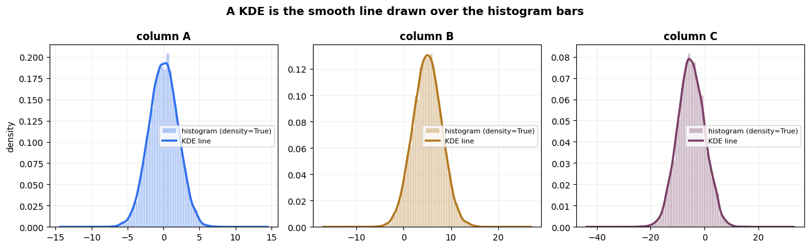<figcaption>Output from this notebook.</figcaption></figure>
<p>The bars and the line tell the same story. From here on only the line is drawn,
because three lines fit on one chart and three sets of bars do not.</p>
<p>Now the same three columns on one pair of axes, with the mean and spread written on:</p>

<div class="code"><div class="code-head"><span>code</span><span class="cell">cell 12</span></div><pre class="py"># the &quot;before&quot; picture, annotated the way it would be drawn on a whiteboard
fig, ax = plt.subplots(figsize=(12, 6))
raw.plot.kde(ax=ax, color=[&quot;#2f6fed&quot;, &quot;#b3781f&quot;, &quot;#7a3f66&quot;], lw=2.4)

# a double-headed arrow per column, showing how much of the axis it claims
for i, col in enumerate(raw.columns):
    y = 0.225 - i * 0.017
    ax.annotate(&quot;&quot;, xy=(raw[col].min(), y), xytext=(raw[col].max(), y),
                arrowprops=dict(arrowstyle=&quot;&lt;-&gt;&quot;, lw=1.6, color=colors[col]))
    ax.text(raw[col].mean(), y, f&quot;{col} spans {raw[col].max() - raw[col].min():.1f} units&quot;,
            ha=&quot;center&quot;, va=&quot;center&quot;, fontsize=9.5, color=colors[col], fontweight=&quot;bold&quot;,
            bbox=dict(boxstyle=&quot;round,pad=0.25&quot;, fc=&quot;white&quot;, ec=&quot;none&quot;))

# the mean of each column, marked on the axis
lines = []
for col in raw.columns:
    m = raw[col].mean()
    ax.axvline(m, color=colors[col], ls=&quot;--&quot;, lw=1.3, alpha=0.8)
    ax.annotate(f&quot;{col}&quot;, xy=(m, 0), xytext=(m, -0.014), ha=&quot;center&quot;,
                fontsize=12, fontweight=&quot;bold&quot;, color=colors[col])
    lines.append(f&quot;{col}:  mean {m:6.2f}   std {raw[col].std():5.2f}   &quot;
                 f&quot;min {raw[col].min():7.2f}   max {raw[col].max():6.2f}&quot;)

ax.text(0.985, 0.985, &quot;\n&quot;.join(lines), transform=ax.transAxes, ha=&quot;right&quot;, va=&quot;top&quot;,
        family=&quot;monospace&quot;, fontsize=9.5,
        bbox=dict(boxstyle=&quot;round,pad=0.5&quot;, fc=&quot;#f7f9fc&quot;, ec=&quot;#8a8f98&quot;))

ax.set_xlim(-30, 20)
ax.set_ylim(-0.025, 0.315)
ax.legend(loc=&quot;upper left&quot;)
ax.set_title(&quot;BEFORE scaling \u2014 three columns, three different rulers&quot;,
             fontsize=13, fontweight=&quot;bold&quot;)
ax.set_xlabel(&quot;value&quot;)
ax.set_ylabel(&quot;density&quot;)
ax.grid(alpha=0.25)
plt.tight_layout()
plt.show()</pre></div>
<figure class="shot">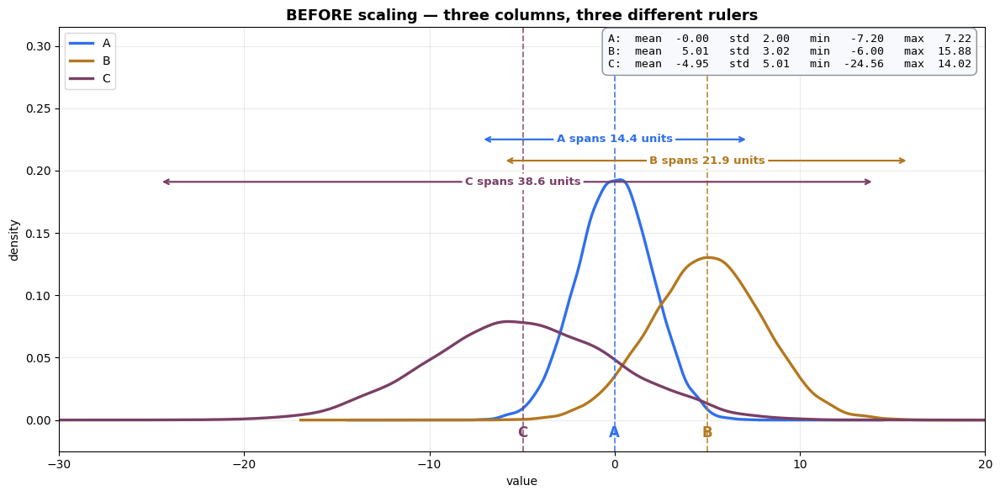<figcaption>Output from this notebook.</figcaption></figure>
<h3>What the picture says</h3>
<p>Three curves, three different places on the x-axis, three different widths.</p>
<ul>
<li><code>A</code> is <strong>tall and narrow</strong> — its values are packed tightly around 0.</li>
<li><code>C</code> is <strong>short and wide</strong> — the same 10,000 values are spread over three times more ground.</li>
</ul>
<p>The double-headed arrows measure how much of the number line each column claims.
That difference in claimed width is the entire problem. A model does not know that
<code>C</code> is &quot;naturally&quot; wider. It only sees that <code>C</code> produces bigger differences between
rows, and concludes <code>C</code> matters more.</p>
<p><strong>The goal of the next few cells:</strong> put all three curves on top of each other, so
no column wins by unit size alone.</p>

<hr />
<h2 id="the-bar-chart-question-in-the-next-cell">The bar-chart question in the next cell</h2>
<p>The comment in the cell asks the right question, so here is the full answer.</p>
<p><strong>What <code>df.plot.bar()</code> does:</strong> it draws <strong>one rectangle per value</strong>. The table has
10,000 rows × 3 columns, so Matplotlib is asked to draw and place <strong>30,000 rectangles</strong>,
then label 10,000 ticks on the x-axis. That is the 24 seconds.</p>
<p><strong>Why it is the wrong chart here:</strong> a bar chart is for <strong>categories</strong> — a handful of
named things you want to compare, like sales per region. Its x-axis is a list of labels.</p>
<p>This data has no labels. It has 10,000 continuous measurements. The right chart for
that is a histogram or a KDE, which <strong>summarise</strong> the values instead of drawing every
one of them.</p>
<table class="tbl"><thead>
<tr>
  <th>You have</th>
  <th>Right chart</th>
</tr>
</thead>
<tbody>
<tr>
  <td>a few named categories</td>
  <td><code>plot.bar()</code></td>
</tr>
<tr>
  <td>many continuous values</td>
  <td><code>plot.hist()</code> or <code>plot.kde()</code></td>
</tr>
<tr>
  <td>values over time</td>
  <td><code>plot.line()</code></td>
</tr>
<tr>
  <td>two continuous columns</td>
  <td><code>plot.scatter()</code></td>
</tr>
</tbody>
</table>
<p>Run the cell once to see the effect, then use the cell after it instead.</p>

<div class="code"><div class="code-head"><span>code</span><span class="cell">cell 15</span></div><pre class="py">df.plot.bar() # What is this plot and why it takes time for 24 sec to render</pre></div>
<div class="out"><div class="h">Output</div><pre>&lt;Axes: &gt;</pre></div>
<figure class="shot">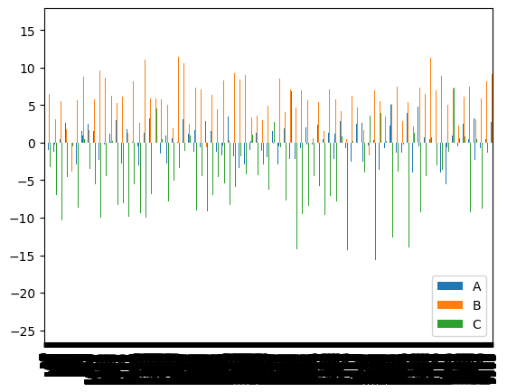<figcaption>Output from this notebook.</figcaption></figure>
<h3>The same intent, drawn correctly</h3>
<p>If the goal was <em>&quot;show me the individual values&quot;</em>, then show a <strong>few</strong> of them.
If the goal was <em>&quot;show me the whole column&quot;</em>, then summarise it.</p>

<div class="code"><div class="code-head"><span>code</span><span class="cell">cell 17</span></div><pre class="py">fig, axes = plt.subplots(1, 2, figsize=(13, 4.5))

# left: a bar chart used properly — few rows, so each bar is readable
raw.head(15).plot.bar(ax=axes[0], color=[&quot;#2f6fed&quot;, &quot;#b3781f&quot;, &quot;#7a3f66&quot;], width=0.8)
axes[0].set_title(&quot;plot.bar() on 15 rows — instant, and readable&quot;, fontweight=&quot;bold&quot;)
axes[0].set_xlabel(&quot;row number&quot;)
axes[0].grid(axis=&quot;y&quot;, alpha=0.25)

# right: the whole column, summarised instead of drawn value by value
raw.plot.hist(ax=axes[1], bins=60, alpha=0.55,
              color=[&quot;#2f6fed&quot;, &quot;#b3781f&quot;, &quot;#7a3f66&quot;])
axes[1].set_title(&quot;plot.hist() on all 10,000 rows — instant, and informative&quot;,
                  fontweight=&quot;bold&quot;)
axes[1].grid(axis=&quot;y&quot;, alpha=0.25)

plt.tight_layout()
plt.show()</pre></div>
<figure class="shot">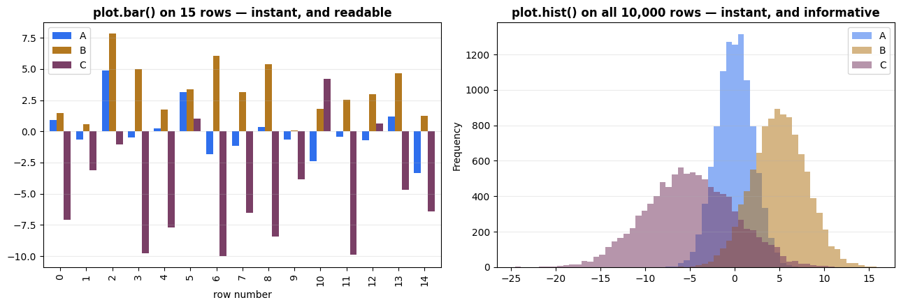<figcaption>Output from this notebook.</figcaption></figure>
<hr />
<h2 id="s-2-the-three-scalers">2. The three scalers</h2>
<p>All three scalers on this page have the <strong>same shape</strong>:</p>
<div class='formula'>x&#x27; = \frac{x - \text{centre}}{\text{spread}}</div>

<p>Subtract something to <strong>move</strong> the data, then divide by something to <strong>stretch or
squeeze</strong> it. They only disagree about which two numbers to use:</p>
<table class="tbl"><thead>
<tr>
  <th>Scaler</th>
  <th>Centre it subtracts</th>
  <th>Spread it divides by</th>
  <th>Result</th>
</tr>
</thead>
<tbody>
<tr>
  <td><code>StandardScaler</code></td>
  <td>mean $\mu$</td>
  <td>standard deviation $\sigma$</td>
  <td>mean 0, std 1</td>
</tr>
<tr>
  <td><code>MinMaxScaler</code></td>
  <td>minimum $x_{min}$</td>
  <td>range $x_{max} - x_{min}$</td>
  <td>every value in 0 … 1</td>
</tr>
<tr>
  <td><code>RobustScaler</code></td>
  <td>median $Q_2$</td>
  <td>$IQR = Q_3 - Q_1$</td>
  <td>median 0, IQR 1</td>
</tr>
</tbody>
</table>
<p>That is the whole topic. Everything below is detail about <strong>which pair to pick</strong>.</p>
<hr />
<h2 id="s-2-1-standardscaler-the-z-score">2.1 StandardScaler — the z-score</h2>
<div class="note"><div class="h">Note</div><p>📘 From the whiteboard: $;z = \dfrac{x - \mu}{\sigma};$ with the boxed result
$;\mu = 0,; \sigma \rightarrow 1$</p>
</div>
<div class='formula'>z = \frac{x - \mu}{\sigma}</div>

<table class="tbl"><thead>
<tr>
  <th>Symbol</th>
  <th>Name</th>
  <th>Plain meaning</th>
</tr>
</thead>
<tbody>
<tr>
  <td>$x$</td>
  <td>the value</td>
  <td>one cell in the column</td>
</tr>
<tr>
  <td>$\mu$ (mu)</td>
  <td>mean</td>
  <td>the centre of the column</td>
</tr>
<tr>
  <td>$\sigma$ (sigma)</td>
  <td>standard deviation</td>
  <td>the average distance from that centre</td>
</tr>
<tr>
  <td>$z$</td>
  <td>z-score</td>
  <td><strong>how many standard deviations away from the mean this value is</strong></td>
</tr>
</tbody>
</table>
<h3>Read it in two steps</h3>
<ol>
<li><strong>$x - \mu$ moves the column</strong> so its centre lands on 0.
A value above the mean becomes positive, below the mean becomes negative.</li>
<li><strong>$\div, \sigma$ rescales the column</strong> so that &quot;one unit&quot; now means
&quot;one standard deviation&quot;.</li>
</ol>
<p>After both steps, a value of <code>2.0</code> means <em>&quot;two standard deviations above average&quot;</em> —
<strong>in every column, regardless of what the column originally measured</strong>. That is the
point. Salary and age end up speaking the same language.</p>
<p>The whiteboard drawing of the ruler is exactly right: the data does not move, the
<strong>measuring tape</strong> underneath it is replaced.</p>
<h3>What it does not do</h3>
<p>It does <strong>not</strong> make the data a bell curve. If the column was skewed before, it is
still skewed after, just re-labelled. The name &quot;standardise&quot; misleads people here.</p>
<h3>Range</h3>
<p>There is <strong>no fixed range</strong>. Most values land in −3 … +3, but an outlier can land at
+50 and nothing stops it.</p>

<div class="code"><div class="code-head"><span>code</span><span class="cell">cell 19</span></div><pre class="py">scaler = StandardScaler() 
scaled = scaler.fit_transform(df)

df = pd.DataFrame(scaled,columns=[&#x27;A&#x27;,&#x27;B&#x27;,&#x27;C&#x27;])
df.plot.kde()</pre></div>
<div class="out"><div class="h">Output</div><pre>&lt;Axes: ylabel=&#x27;Density&#x27;&gt;</pre></div>
<figure class="shot">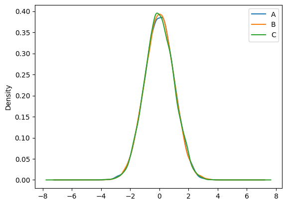<figcaption>Output from this notebook.</figcaption></figure>
<h3>What just happened to the picture</h3>
<p>Compare it with the &quot;before&quot; chart. The three curves have <strong>moved on top of each other</strong>.</p>
<ul>
<li>All three now peak at <strong>0</strong> — because $x - \mu$ pushed each centre to zero.</li>
<li>All three now have the <strong>same width</strong> — because $\div, \sigma$ gave each one a
spread of 1.</li>
<li>The peak height jumped from about <code>0.19</code> to about <code>0.40</code>. Nothing became more common.
Column <code>A</code> was squeezed from a 14-unit span into a 7-unit span, so the curve had to
grow taller to keep the area at 1.</li>
</ul>
<p>The three columns are now <strong>comparable</strong>. That is the only thing scaling ever promises.</p>
<div class="note"><div class="h">Note</div><p>⚠️ Note that this cell rebinds <code>df</code>. From here on <code>df</code> holds <strong>scaled</strong> data, and the
next two cells receive it. Whether that matters is answered in section 2.4 — the
answer is genuinely surprising.</p>
</div>

<div class="code"><div class="code-head"><span>code</span><span class="cell">cell 21</span></div><pre class="py"># what did .fit() actually store?
scaler_demo = StandardScaler().fit(raw)

print(&quot;mean_   (the μ it subtracts) :&quot;, scaler_demo.mean_.round(4))
print(&quot;scale_  (the σ it divides by):&quot;, scaler_demo.scale_.round(4))
print()

# do the formula by hand, then check it against sklearn
manual = (raw - raw.mean()) / raw.std(ddof=0)      # ddof=0 -&gt; population std, what sklearn uses
sk     = scaler_demo.transform(raw)

print(&quot;manual (x - μ) / σ  matches sklearn :&quot;, np.allclose(manual.values, sk))
print()

after = pd.DataFrame(sk, columns=raw.columns)
print(&quot;after StandardScaler&quot;)
print(&quot;  mean :&quot;, after.mean().round(10).tolist(), &quot;  -&gt; 0&quot;)
print(&quot;  std  :&quot;, after.std(ddof=0).round(10).tolist(), &quot;  -&gt; 1&quot;)
print(&quot;  min  :&quot;, after.min().round(2).tolist())
print(&quot;  max  :&quot;, after.max().round(2).tolist(), &quot;  &lt;- NOT bounded&quot;)</pre></div>
<div class="out"><div class="h">Output</div><pre>mean_   (the μ it subtracts) : [-6.0000e-04  5.0106e+00 -4.9549e+00]
scale_  (the σ it divides by): [2.0017 3.0158 5.0075]

manual (x - μ) / σ  matches sklearn : True

after StandardScaler
  mean : [-0.0, 0.0, 0.0]   -&gt; 0
  std  : [1.0, 1.0, 1.0]   -&gt; 1
  min  : [-3.59, -3.65, -3.91]
  max  : [3.61, 3.61, 3.79]   &lt;- NOT bounded</pre></div>
<h3>One trap worth knowing</h3>
<p><code>raw.std()</code> in Pandas divides by $n-1$. <code>StandardScaler</code> divides by $n$.
That is why the manual line above passes <code>ddof=0</code>.</p>
<p>With 10,000 rows the difference is invisible. With 10 rows it is not. If a hand check
ever disagrees with sklearn by a hair, this is usually the reason.</p>

<hr />
<h2 id="s-2-2-minmaxscaler-squeeze-into-a-fixed-box">2.2 MinMaxScaler — squeeze into a fixed box</h2>
<div class="note"><div class="h">Note</div><p>📘 From the whiteboard: $;x' = \dfrac{x - x_{min}}{x_{max} - x_{min}};$
with the worked example $;5 - 2 = 3$</p>
</div>
<div class='formula'>x&#x27; = \frac{x - x_{min}}{x_{max} - x_{min}}</div>

<table class="tbl"><thead>
<tr>
  <th>Symbol</th>
  <th>Plain meaning</th>
</tr>
</thead>
<tbody>
<tr>
  <td>$x_{min}$</td>
  <td>the smallest value <strong>in that column</strong></td>
</tr>
<tr>
  <td>$x_{max}$</td>
  <td>the largest value <strong>in that column</strong></td>
</tr>
<tr>
  <td>$x_{max} - x_{min}$</td>
  <td>the range — the full width of the column</td>
</tr>
</tbody>
</table>
<h3>Read it in two steps</h3>
<ol>
<li><strong>$x - x_{min}$</strong> slides the column so the smallest value sits at <strong>0</strong>.</li>
<li><strong>$\div,(x_{max} - x_{min})$</strong> shrinks the column so the largest value lands on <strong>1</strong>.</li>
</ol>
<p>Everything else falls proportionally in between. The whiteboard's column of ticks
with $x_{min}$ marked at the bottom and $x_{max}$ at the top is precisely this: the
scaler reads only those two numbers off the column and ignores the other 9,998.</p>
<h3>Worked example, using the whiteboard's numbers</h3>
<p>Column = <code>[2, 3, 5]</code>, so $x_{min} = 2$, $x_{max} = 5$, range $= 5 - 2 = 3$.</p>
<table class="tbl"><thead>
<tr>
  <th>$x$</th>
  <th>$x - 2$</th>
  <th>$\div, 3$</th>
  <th>result</th>
</tr>
</thead>
<tbody>
<tr>
  <td>2</td>
  <td>0</td>
  <td>0 / 3</td>
  <td><strong>0.00</strong></td>
</tr>
<tr>
  <td>3</td>
  <td>1</td>
  <td>1 / 3</td>
  <td><strong>0.33</strong></td>
</tr>
<tr>
  <td>5</td>
  <td>3</td>
  <td>3 / 3</td>
  <td><strong>1.00</strong></td>
</tr>
</tbody>
</table>
<p>The smallest value always becomes exactly 0. The largest always becomes exactly 1.</p>
<h3>The weakness, stated up front</h3>
<p>The formula uses <strong>only the two most extreme values in the column</strong>. One wrong value —
a typo, a sensor spike, a <code>9999</code> used as a missing-data marker — sets $x_{max}$ all by
itself, and then all the real data gets crushed into a sliver near 0. Section 2.6
shows this happening.</p>
<h3>Where it is still the right choice</h3>
<ul>
<li><strong>Images.</strong> Pixels are already 0 … 255, so dividing into 0 … 1 is natural and there
are no outliers by definition.</li>
<li><strong>Neural networks.</strong> Bounded inputs keep activation functions in their useful range.</li>
<li>Any time a downstream step <strong>requires</strong> a fixed range.</li>
</ul>

<div class="code"><div class="code-head"><span>code</span><span class="cell">cell 24</span></div><pre class="py">minimax = MinMaxScaler()
mm_scaled = minimax.fit_transform(df)

df = pd.DataFrame(mm_scaled,columns=[&quot;A&quot;,&#x27;B&#x27;,&quot;C&quot;])
df.plot.kde()</pre></div>
<div class="out"><div class="h">Output</div><pre>&lt;Axes: ylabel=&#x27;Density&#x27;&gt;</pre></div>
<figure class="shot">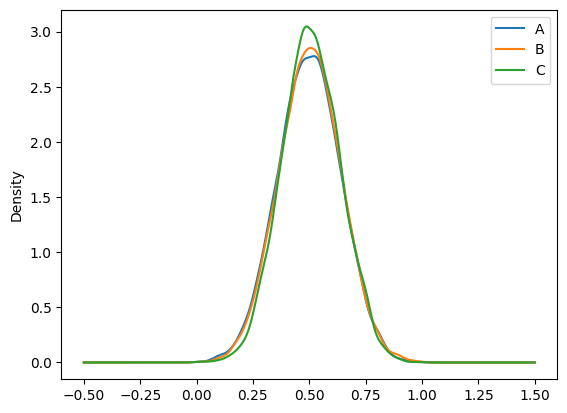<figcaption>Output from this notebook.</figcaption></figure>
<h3>What just happened</h3>
<p>Look at the x-axis: it now runs from <strong>0 to 1</strong>, exactly as promised. Every value in
every column is inside that box.</p>
<p>Look at the y-axis: the peak jumped to about <strong>3.0</strong>. Same reason as before. The data
was compressed into a 1-unit-wide box, so the density curve had to grow tall to keep
its area at 1. <strong>A tall KDE peak means a narrow x-axis, never &quot;more data&quot;.</strong></p>
<p>And the shape is still the same bell. Moving and squeezing cannot change shape.</p>

<div class="code"><div class="code-head"><span>code</span><span class="cell">cell 26</span></div><pre class="py"># what did .fit() actually store?
mm_demo = MinMaxScaler().fit(raw)

print(&quot;data_min_ :&quot;, mm_demo.data_min_.round(3))
print(&quot;data_max_ :&quot;, mm_demo.data_max_.round(3))
print(&quot;data_range_ (max - min) :&quot;, mm_demo.data_range_.round(3))
print()

manual = (raw - raw.min()) / (raw.max() - raw.min())
sk     = mm_demo.transform(raw)
print(&quot;manual (x - min) / (max - min) matches sklearn :&quot;, np.allclose(manual.values, sk))
print()

after = pd.DataFrame(sk, columns=raw.columns)
print(&quot;after MinMaxScaler&quot;)
print(&quot;  min :&quot;, after.min().round(6).tolist(), &quot;  -&gt; exactly 0&quot;)
print(&quot;  max :&quot;, after.max().round(6).tolist(), &quot;  -&gt; exactly 1&quot;)
print()

# the whiteboard&#x27;s own worked example, checked
tiny = np.array([[2.], [3.], [5.]])
print(&quot;whiteboard example [2, 3, 5] -&gt;&quot;, MinMaxScaler().fit_transform(tiny).ravel().round(4))</pre></div>
<div class="out"><div class="h">Output</div><pre>data_min_ : [ -7.196  -6.002 -24.558]
data_max_ : [ 7.225 15.884 14.023]
data_range_ (max - min) : [14.42  21.886 38.581]

manual (x - min) / (max - min) matches sklearn : True

after MinMaxScaler
  min : [0.0, 0.0, 0.0]   -&gt; exactly 0
  max : [1.0, 1.0, 1.0]   -&gt; exactly 1

whiteboard example [2, 3, 5] -&gt; [0.     0.3333 1.    ]</pre></div>
<hr />
<h2 id="s-2-3-robustscaler-the-one-that-ignores-outliers">2.3 RobustScaler — the one that ignores outliers</h2>
<div class="note"><div class="h">Note</div><p>📘 From the whiteboard: labelled <strong>RS</strong>, drawn against a bell curve with the
extreme values circled at both tails —
$;x' = \dfrac{x - Q_2}{IQR}$</p>
</div>
<div class='formula'>x&#x27; = \frac{x - Q_2}{IQR} \qquad\text{where}\qquad IQR = Q_3 - Q_1</div>

<h3>The two new words</h3>
<p>Sort the column from smallest to largest and cut it into four equal piles:</p>
<div class="code"><pre>   smallest  ────────────────────────────────────────────  largest
             │           │            │            │
            min         Q1           Q2           Q3        max
                        25%         50%          75%
                                  MEDIAN
                         └──────── IQR ──────────┘
                            the middle 50% of the data
</pre></div>
<table class="tbl"><thead>
<tr>
  <th>Term</th>
  <th>Plain meaning</th>
</tr>
</thead>
<tbody>
<tr>
  <td>$Q_1$</td>
  <td>the value 25% of the way up the sorted column</td>
</tr>
<tr>
  <td>$Q_2$</td>
  <td>the <strong>median</strong> — the middle value</td>
</tr>
<tr>
  <td>$Q_3$</td>
  <td>the value 75% of the way up</td>
</tr>
<tr>
  <td>$IQR$</td>
  <td>$Q_3 - Q_1$ — how wide the <strong>middle half</strong> of the data is</td>
</tr>
</tbody>
</table>
<h3>Why this beats mean and std when outliers exist</h3>
<p>Take <code>[1, 2, 3, 4, 5]</code> and change the last value to <code>1000</code>.</p>
<table class="tbl"><thead>
<tr>
  <th>Statistic</th>
  <th>Before</th>
  <th>After</th>
  <th>Moved?</th>
</tr>
</thead>
<tbody>
<tr>
  <td>mean</td>
  <td>3.0</td>
  <td>202.0</td>
  <td><strong>destroyed</strong></td>
</tr>
<tr>
  <td>std</td>
  <td>1.41</td>
  <td>399.0</td>
  <td><strong>destroyed</strong></td>
</tr>
<tr>
  <td>median ($Q_2$)</td>
  <td>3.0</td>
  <td>3.0</td>
  <td><strong>unchanged</strong></td>
</tr>
<tr>
  <td>IQR</td>
  <td>2.0</td>
  <td>2.0</td>
  <td><strong>unchanged</strong></td>
</tr>
</tbody>
</table>
<p>The median is a <strong>position</strong>, not a total. Dragging one value to infinity moves the
middle of the queue by at most one place. The mean is a total, so one huge value drags
it anywhere.</p>
<p><code>RobustScaler</code> is built entirely from positions. That is the whole idea.</p>
<h3>Range</h3>
<p>Like <code>StandardScaler</code>, there is <strong>no fixed range</strong>. Outliers still exist after scaling
— they land far out, which is exactly what you want. <strong>A scaler is not an outlier
remover.</strong> The whiteboard circles those tail values for a reason: they are still there
afterwards. <code>RobustScaler</code> only stops them from distorting <em>the other 99% of the rows</em>.</p>

<div class="code"><div class="code-head"><span>code</span><span class="cell">cell 28</span></div><pre class="py">rscaler = RobustScaler()
robust = rscaler.fit_transform(df)
df = pd.DataFrame(robust, columns=[&#x27;A&#x27;,&#x27;B&#x27;,&#x27;C&#x27;])
df.plot.kde()</pre></div>
<div class="out"><div class="h">Output</div><pre>&lt;Axes: ylabel=&#x27;Density&#x27;&gt;</pre></div>
<figure class="shot">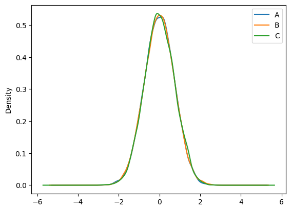<figcaption>Output from this notebook.</figcaption></figure>
<h3>What just happened</h3>
<p>The curves are centred on 0 again, and the x-axis runs to roughly ±3.</p>
<p>On <em>this</em> data — clean, symmetric, no outliers — the result looks a lot like
<code>StandardScaler</code>. That is expected. For a perfect bell curve, $IQR \approx 1.35,\sigma$,
so the two scalers differ only by a constant factor.</p>
<p><strong>The difference between them only appears when outliers appear.</strong> Section 2.6 adds
three of them and the two scalers stop agreeing immediately.</p>

<div class="code"><div class="code-head"><span>code</span><span class="cell">cell 30</span></div><pre class="py"># what did .fit() actually store?
rs_demo = RobustScaler().fit(raw)

print(&quot;center_ (the median Q2 it subtracts) :&quot;, rs_demo.center_.round(4))
print(&quot;scale_  (the IQR it divides by)      :&quot;, rs_demo.scale_.round(4))
print()

q1 = raw.quantile(0.25)
q2 = raw.quantile(0.50)
q3 = raw.quantile(0.75)
print(&quot;Q1 :&quot;, q1.round(4).tolist())
print(&quot;Q2 :&quot;, q2.round(4).tolist(), &quot;  &lt;- median, matches center_&quot;)
print(&quot;Q3 :&quot;, q3.round(4).tolist())
print(&quot;IQR = Q3 - Q1 :&quot;, (q3 - q1).round(4).tolist(), &quot;  &lt;- matches scale_&quot;)
print()

manual = (raw - q2) / (q3 - q1)
print(&quot;manual (x - Q2) / IQR matches sklearn :&quot;, np.allclose(manual.values, rs_demo.transform(raw)))
print()

# the &quot;one bad value&quot; demo from the notes above, run for real
clean_col = np.array([[1.], [2.], [3.], [4.], [5.]])
dirty_col = np.array([[1.], [2.], [3.], [4.], [1000.]])
for name, col in [(&quot;clean [1,2,3,4,5]&quot;, clean_col), (&quot;dirty [1,2,3,4,1000]&quot;, dirty_col)]:
    print(f&quot;{name:24s} mean={col.mean():8.2f}  std={col.std():8.2f}&quot;
          f&quot;  median={np.median(col):5.2f}  IQR={np.percentile(col,75)-np.percentile(col,25):5.2f}&quot;)</pre></div>
<div class="out"><div class="h">Output</div><pre>center_ (the median Q2 it subtracts) : [ 0.0124  5.0121 -5.0212]
scale_  (the IQR it divides by)      : [2.7274 4.0721 6.7854]

Q1 : [-1.3573, 2.9752, -8.3152]
Q2 : [0.0124, 5.0121, -5.0212]   &lt;- median, matches center_
Q3 : [1.3701, 7.0473, -1.5298]
IQR = Q3 - Q1 : [2.7274, 4.0721, 6.7854]   &lt;- matches scale_

manual (x - Q2) / IQR matches sklearn : True

clean [1,2,3,4,5]        mean=    3.00  std=    1.41  median= 3.00  IQR= 2.00
dirty [1,2,3,4,1000]     mean=  202.00  std=  399.00  median= 3.00  IQR= 2.00</pre></div>
<hr />
<h2 id="s-2-4-wait-the-three-cells-above-fed-each-other-do">2.4 Wait — the three cells above fed each other. Does that break the comparison?</h2>
<p>This is worth a whole section, because the honest answer is <strong>no, and the reason is
useful</strong>.</p>
<h3>What actually happened</h3>
<p>Each of the three cells rebinds the name <code>df</code>, so:</p>
<div class="code"><pre>   the DataFrame cell    df = raw
   the StandardScaler cell   df = StandardScaler().fit_transform(df)   ← on raw
   the MinMaxScaler cell     df = MinMaxScaler().fit_transform(df)     ← on the STANDARDISED data
   the RobustScaler cell     df = RobustScaler().fit_transform(df)     ← on the MIN-MAX data
</pre></div>
<p>So the MinMax chart was not drawn from the raw data. It was drawn from data that had
already been standardised. By every instinct that should have corrupted the comparison.</p>
<h3>Why it did not</h3>
<p>All three scalers have the form $x' = \dfrac{x - a}{b}$, where $a$ and $b$ are
<strong>recomputed from whatever data they are handed</strong>. A transform of that form is called
<strong>affine</strong> — a shift plus a stretch.</p>
<p>Feed an already-shifted-and-stretched column into a second affine scaler, and the
second scaler measures its own $a$ and $b$ <em>from that shifted data</em>. The two effects
cancel exactly. Written out for MinMax on standardised input:</p>
<div class='formula'>\frac{z - z_{min}}{z_{max} - z_{min}}
= \frac{\frac{x-\mu}{\sigma} - \frac{x_{min}-\mu}{\sigma}}{\frac{x_{max}-\mu}{\sigma} - \frac{x_{min}-\mu}{\sigma}}
= \frac{x - x_{min}}{x_{max} - x_{min}}</div>

<p>The $\mu$ cancels in the subtraction and the $\sigma$ cancels in the division. The
result is identical to running <code>MinMaxScaler</code> on the raw column. The next cell proves
it numerically rather than asking you to trust the algebra.</p>

<div class="code"><div class="code-head"><span>code</span><span class="cell">cell 32</span></div><pre class="py"># rebuild the exact chain the three scaler cells above created
chain_std    = StandardScaler().fit_transform(raw)
chain_mm     = MinMaxScaler().fit_transform(chain_std)     # minmax applied to standardised data
chain_robust = RobustScaler().fit_transform(chain_mm)      # robust applied to min-maxed data

# and the fair version: each scaler applied straight to the raw data
direct_std    = StandardScaler().fit_transform(raw)
direct_mm     = MinMaxScaler().fit_transform(raw)
direct_robust = RobustScaler().fit_transform(raw)

print(&quot;chained result == direct result ?&quot;)
print(&quot;  StandardScaler :&quot;, np.allclose(chain_std,    direct_std))
print(&quot;  MinMaxScaler   :&quot;, np.allclose(chain_mm,     direct_mm),
      &quot;   max difference:&quot;, np.abs(chain_mm - direct_mm).max())
print(&quot;  RobustScaler   :&quot;, np.allclose(chain_robust, direct_robust),
      &quot;   max difference:&quot;, np.abs(chain_robust - direct_robust).max())</pre></div>
<div class="out"><div class="h">Output</div><pre>chained result == direct result ?
  StandardScaler : True
  MinMaxScaler   : True    max difference: 2.220446049250313e-16
  RobustScaler   : True    max difference: 1.3322676295501878e-15</pre></div>
<p><code>True</code> on all three, with differences around <code>1e-16</code> — that is floating-point dust,
not a real difference.</p>
<h3>So when <em>would</em> this pattern be a real bug?</h3>
<p>Three situations, and all three show up in real projects:</p>
<table class="tbl"><thead>
<tr>
  <th>Situation</th>
  <th>Does the chain still cancel?</th>
</tr>
</thead>
<tbody>
<tr>
  <td>A <strong>non-affine</strong> step in between — <code>np.log</code>, <code>PowerTransformer</code>, <code>QuantileTransformer</code></td>
  <td><strong>No.</strong> Those bend the shape, and nothing downstream can undo it.</td>
</tr>
<tr>
  <td><strong><code>fit</code> on train, <code>transform</code> on test</strong></td>
  <td><strong>No.</strong> The second scaler's $a$ and $b$ come from the train set, so they do not cancel against the test set's own min and max.</td>
</tr>
<tr>
  <td>You still need the original values later</td>
  <td><strong>No</strong> — the name <code>df</code> was overwritten, and the raw numbers are gone.</td>
</tr>
</tbody>
</table>
<h3>The habit to take away</h3>
<p>Give each result its own name. It costs one word and removes the whole question:</p>
<div class="code"><pre class="py">df_std    = pd.DataFrame(StandardScaler().fit_transform(raw), columns=raw.columns)
df_minmax = pd.DataFrame(MinMaxScaler().fit_transform(raw),   columns=raw.columns)
df_robust = pd.DataFrame(RobustScaler().fit_transform(raw),   columns=raw.columns)
</pre></div>
<p>Backend analogy: this is the same reason you return a <strong>new</strong> DTO from a mapper instead
of mutating the request object in place. It worked here. It stops working the moment
someone inserts a step in the middle.</p>
<p>That is exactly what the next section does — three separate names, all fed from <code>raw</code>.</p>

<hr />
<h2 id="s-2-5-the-fair-side-by-side-comparison">2.5 The fair side-by-side comparison</h2>
<p>Three scalers, all fed the <strong>same raw data</strong>, drawn on one page.</p>

<div class="code"><div class="code-head"><span>code</span><span class="cell">cell 35</span></div><pre class="py"># every scaler fed from `raw` — no chaining, each result gets its own name
views = {
    &quot;1. RAW (no scaling)&quot;: raw,
    &quot;2. StandardScaler&quot;:   pd.DataFrame(StandardScaler().fit_transform(raw), columns=raw.columns),
    &quot;3. MinMaxScaler&quot;:     pd.DataFrame(MinMaxScaler().fit_transform(raw),   columns=raw.columns),
    &quot;4. RobustScaler&quot;:     pd.DataFrame(RobustScaler().fit_transform(raw),   columns=raw.columns),
}

fig, axes = plt.subplots(2, 2, figsize=(13.5, 8.5))
for ax, (name, d) in zip(axes.ravel(), views.items()):
    d.plot.kde(ax=ax, color=[&quot;#2f6fed&quot;, &quot;#b3781f&quot;, &quot;#7a3f66&quot;], lw=2.3)
    lo, hi = d.min().min(), d.max().max()
    peak = max(line.get_ydata().max() for line in ax.get_lines())
    ax.set_title(f&quot;{name}\nx-axis spans {lo:.2f} to {hi:.2f}   |   curve peaks at {peak:.2f}&quot;,
                 fontweight=&quot;bold&quot;, fontsize=11)
    ax.grid(alpha=0.25)
    ax.set_ylabel(&quot;density&quot;)
    ax.axvline(0, color=&quot;#8a8f98&quot;, lw=0.8, ls=&quot;:&quot;)

fig.suptitle(&quot;Same 10,000 rows, three scalers — the SHAPE never changes, only the ruler&quot;,
             fontsize=14, fontweight=&quot;bold&quot;)
plt.tight_layout()
plt.show()</pre></div>
<figure class="shot">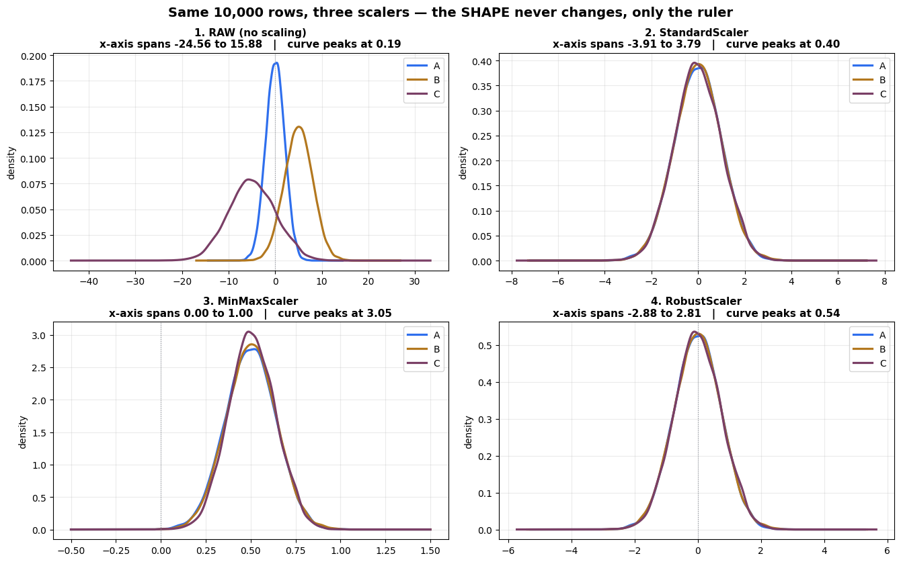<figcaption>Output from this notebook.</figcaption></figure>
<h3>Read the four panels together</h3>
<table class="tbl"><thead>
<tr>
  <th>Panel</th>
  <th>Where the curves sit</th>
  <th>What changed</th>
</tr>
</thead>
<tbody>
<tr>
  <td><strong>RAW</strong></td>
  <td>three separate humps</td>
  <td>nothing yet — <code>C</code> claims three times more axis than <code>A</code></td>
</tr>
<tr>
  <td><strong>StandardScaler</strong></td>
  <td>one hump at 0, width 1</td>
  <td>centres aligned, spreads equalised</td>
</tr>
<tr>
  <td><strong>MinMaxScaler</strong></td>
  <td>one hump inside 0 … 1</td>
  <td>everything forced into a box</td>
</tr>
<tr>
  <td><strong>RobustScaler</strong></td>
  <td>one hump at 0, width ≈ 1.35</td>
  <td>centres aligned using the median instead</td>
</tr>
</tbody>
</table>
<p>Three things to notice:</p>
<ol>
<li><strong>In panels 2, 3 and 4 the three coloured curves lie on top of each other.</strong>
Before scaling they did not. That is the job, done.</li>
<li><strong>The bell shape is identical in all four panels.</strong> Only the numbers on the x-axis
changed. Scaling is a relabelling of the axis, nothing more.</li>
<li><strong>The peak height rises as the x-axis shrinks.</strong> Raw peaks near 0.19, <code>RobustScaler</code>
near 0.54, <code>MinMaxScaler</code> near 3.0. Area stays 1, so a narrow curve must be tall.</li>
</ol>
<p>The next cell prints the same comparison as numbers.</p>

<div class="code"><div class="code-head"><span>code</span><span class="cell">cell 37</span></div><pre class="py"># the same four panels, as a table
rows = []
for name, d in views.items():
    rows.append({
        &quot;view&quot;:   name,
        &quot;mean&quot;:   round(d.values.mean(), 3),
        &quot;std&quot;:    round(d.values.std(), 3),
        &quot;min&quot;:    round(d.values.min(), 3),
        &quot;max&quot;:    round(d.values.max(), 3),
        &quot;median&quot;: round(float(np.median(d.values)), 3),
        &quot;IQR&quot;:    round(float(np.percentile(d.values, 75) - np.percentile(d.values, 25)), 3),
    })

pd.DataFrame(rows).set_index(&quot;view&quot;)</pre></div>
<div class="out"><div class="h">Output</div><pre>                      mean    std     min     max  median    IQR
view                                                            
1. RAW (no scaling)  0.018  5.411 -24.558  15.884   0.426  6.483
2. StandardScaler    0.000  1.000  -3.915   3.790  -0.003  1.357
3. MinMaxScaler      0.503  0.136   0.000   1.000   0.503  0.184
4. RobustScaler      0.002  0.738  -2.879   2.807  -0.000  1.002</pre></div>
<p>Each scaler puts a <strong>1</strong> and a <strong>0</strong> exactly where its formula promised:</p>
<ul>
<li><code>StandardScaler</code> → <code>mean</code> 0, <code>std</code> 1. The other columns are free.</li>
<li><code>MinMaxScaler</code> → <code>min</code> 0, <code>max</code> 1. The other columns are free.</li>
<li><code>RobustScaler</code> → <code>median</code> 0, <code>IQR</code> 1. The other columns are free.</li>
</ul>
<p>Read the table that way and there is nothing left to memorise. <strong>Each scaler
guarantees exactly the two numbers in its own formula, and makes no promise about
anything else.</strong></p>

<h3>The same idea on five numbers</h3>
<p>10,000 rows make a nice curve but hide the arithmetic. Here are five values you can
check by hand, on four rulers.</p>

<div class="code"><div class="code-head"><span>code</span><span class="cell">cell 40</span></div><pre class="py"># five values, four rulers — the whiteboard version
vals = np.array([[2.], [5.], [8.], [12.], [20.]])

rulers = [
    (&quot;RAW&quot;,             vals.ravel(),                                    &quot;no formula&quot;,                    &quot;#8a8f98&quot;),
    (&quot;StandardScaler&quot;,  StandardScaler().fit_transform(vals).ravel(),     r&quot;$(x - \mu)\,/\,\sigma$&quot;,       &quot;#2f6fed&quot;),
    (&quot;MinMaxScaler&quot;,    MinMaxScaler().fit_transform(vals).ravel(),       r&quot;$(x - x_{min})\,/\,(x_{max}-x_{min})$&quot;, &quot;#b3781f&quot;),
    (&quot;RobustScaler&quot;,    RobustScaler().fit_transform(vals).ravel(),       r&quot;$(x - Q_2)\,/\,IQR$&quot;,           &quot;#2f9e6f&quot;),
]

fig, axes = plt.subplots(4, 1, figsize=(12.5, 7))
for ax, (name, v, formula, c) in zip(axes, rulers):
    pad = (v.max() - v.min()) * 0.18
    ax.axhline(0, color=c, lw=2.5)
    ax.plot(v, np.zeros_like(v), &quot;o&quot;, ms=11, color=c, zorder=3)
    for original, scaled in zip(vals.ravel(), v):
        ax.annotate(f&quot;{scaled:.2f}&quot;, xy=(scaled, 0), xytext=(scaled, 0.35),
                    ha=&quot;center&quot;, fontsize=10, fontweight=&quot;bold&quot;, color=c)
        ax.annotate(f&quot;{original:.0f}&quot;, xy=(scaled, 0), xytext=(scaled, -0.55),
                    ha=&quot;center&quot;, fontsize=9, color=&quot;#8a8f98&quot;)
    ax.set_xlim(v.min() - pad, v.max() + pad)
    ax.set_ylim(-1, 1)
    ax.set_yticks([])
    ax.text(-0.005, 0.5, f&quot;{name}\n{formula}&quot;, transform=ax.transAxes,
            ha=&quot;right&quot;, va=&quot;center&quot;, fontsize=10.5, fontweight=&quot;bold&quot;, color=c)
    ax.spines[[&quot;top&quot;, &quot;right&quot;, &quot;left&quot;, &quot;bottom&quot;]].set_visible(False)
    ax.tick_params(labelsize=8, colors=&quot;#8a8f98&quot;)

fig.suptitle(&quot;Five values, four rulers — the dots never change their ORDER or their SPACING RATIO&quot;,
             fontsize=13, fontweight=&quot;bold&quot;)
fig.subplots_adjust(left=0.20, top=0.90, hspace=0.55)
plt.show()</pre></div>
<figure class="shot">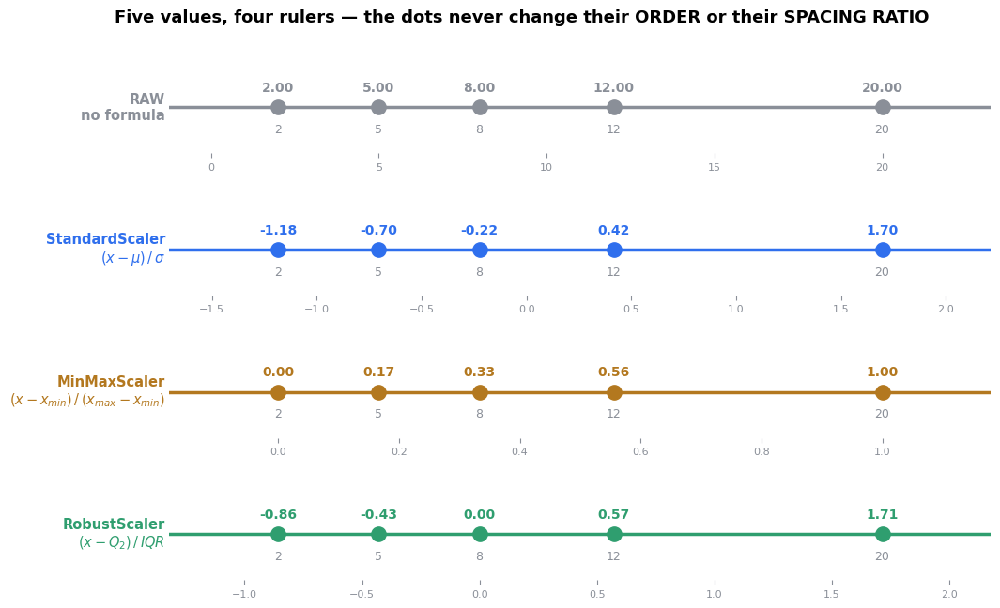<figcaption>Output from this notebook.</figcaption></figure>
<h3>The check to do by hand</h3>
<p>Take the value <strong>8</strong> (the middle dot):</p>
<table class="tbl"><thead>
<tr>
  <th>Scaler</th>
  <th>Arithmetic</th>
  <th>Result</th>
</tr>
</thead>
<tbody>
<tr>
  <td>StandardScaler</td>
  <td>$\mu = 9.4$, $\sigma = 6.25$ → $(8 - 9.4)/6.25$</td>
  <td>−0.22</td>
</tr>
<tr>
  <td>MinMaxScaler</td>
  <td>$x_{min}=2$, $x_{max}=20$ → $(8 - 2)/(20 - 2)$</td>
  <td>0.33</td>
</tr>
<tr>
  <td>RobustScaler</td>
  <td>$Q_2 = 8$, $IQR = 12 - 5 = 7$ → $(8 - 8)/7$</td>
  <td>0.00</td>
</tr>
</tbody>
</table>
<p>Four completely different numbers for the same value. But look at the picture:
<strong>the dots keep the same order and the same relative spacing on every ruler.</strong> The gap
from 2 to 5 stays proportionally the gap it always was.</p>
<p>That is the visual proof that scaling <strong>carries no information away</strong>. It is a change
of units, like converting a price from rupees to dollars. The cheapest item is still
the cheapest item.</p>

<hr />
<h2 id="s-2-6-the-test-that-separates-the-three-scalers">2.6 The test that separates the three scalers</h2>
<p>Everything so far ran on clean, well-behaved data, where all three scalers looked
roughly interchangeable. Real data is not clean.</p>
<div class="note"><div class="h">Note</div><p>📘 The whiteboard drawing of a bell curve with the tail values <strong>circled</strong> is this
exact scenario. Those circled points are outliers, and the question is what each
scaler does when they are present.</p>
</div>
<p>The experiment: take the same 10,000 good rows and add <strong>three</strong> absurd values —
150, 160, 170, where the real data lives between −7 and +7. Then measure how much of
the axis the 10,000 good rows still occupy.</p>

<div class="code"><div class="code-head"><span>code</span><span class="cell">cell 43</span></div><pre class="py"># 10,000 good rows, then the same rows with 3 absurd values bolted on
clean_data = raw[[&quot;A&quot;]].values                                   # real range is about -7 .. +7
dirty_data = np.vstack([clean_data, [[150.], [160.], [170.]]])   # 3 nonsense readings

fig, axes = plt.subplots(3, 1, figsize=(12.5, 8))
summary = []

for ax, (name, Scaler) in zip(axes, [(&quot;StandardScaler&quot;, StandardScaler),
                                     (&quot;MinMaxScaler&quot;,   MinMaxScaler),
                                     (&quot;RobustScaler&quot;,   RobustScaler)]):
    a = Scaler().fit_transform(clean_data).ravel()          # fitted without outliers
    b = Scaler().fit_transform(dirty_data).ravel()          # fitted WITH outliers
    b_good = b[:len(clean_data)]                            # where the good rows landed

    for y, vals, label, c in [(1.0, a,      &quot;10,000 clean rows&quot;,             &quot;#2f9e6f&quot;),
                              (0.4, b_good, &quot;the SAME rows, 3 outliers added&quot;, &quot;#d64545&quot;)]:
        lo, hi = np.percentile(vals, 0.5), np.percentile(vals, 99.5)
        ax.plot([lo, hi], [y, y], lw=14, color=c, solid_capstyle=&quot;butt&quot;, alpha=0.85)
        ax.text(lo, y + 0.19, f&quot;{label} — real data now spans {hi - lo:.2f}&quot;,
                va=&quot;bottom&quot;, ha=&quot;left&quot;, fontsize=9.5, color=c, fontweight=&quot;bold&quot;)

    ax.scatter(b[len(clean_data):], [0.4] * 3, marker=&quot;x&quot;, s=110, color=&quot;black&quot;, zorder=5)
    ax.text(b[len(clean_data):].max(), 0.08, &quot;the 3 outliers&quot;, fontsize=9, ha=&quot;right&quot;)

    before = np.percentile(a, 99.5) - np.percentile(a, 0.5)
    after  = np.percentile(b_good, 99.5) - np.percentile(b_good, 0.5)
    summary.append({&quot;scaler&quot;: name, &quot;span before&quot;: round(before, 3),
                    &quot;span after&quot;: round(after, 3), &quot;shrunk by&quot;: f&quot;{before / after:.1f}x&quot;})

    ax.set_yticks([]); ax.set_ylim(0, 1.55)
    ax.set_title(name, loc=&quot;left&quot;, fontweight=&quot;bold&quot;, fontsize=12)
    ax.axvline(0, color=&quot;#8a8f98&quot;, lw=0.8)
    ax.grid(axis=&quot;x&quot;, alpha=0.25)

fig.suptitle(&quot;What 3 bad values do to 10,000 good rows   (each row has its own x-axis)&quot;,
             fontsize=13.5, fontweight=&quot;bold&quot;)
plt.tight_layout()
plt.show()

pd.DataFrame(summary).set_index(&quot;scaler&quot;)</pre></div>
<div class="out"><div class="h">Output</div><pre>                span before  span after shrunk by
scaler                                           
StandardScaler        5.055       2.958      1.7x
MinMaxScaler          0.702       0.057     12.3x
RobustScaler          3.710       3.709      1.0x</pre></div>
<figure class="shot">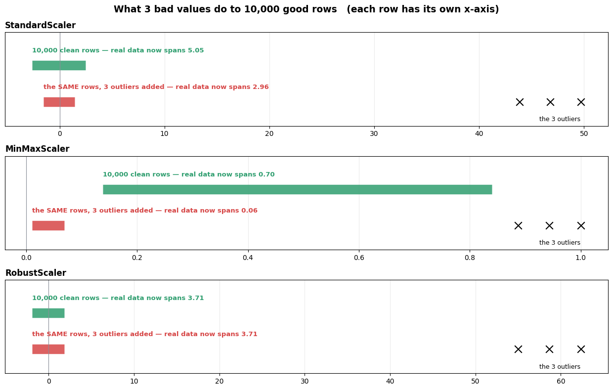<figcaption>Output from this notebook.</figcaption></figure>
<h3>The result, in one sentence each</h3>
<table class="tbl"><thead>
<tr>
  <th>Scaler</th>
  <th>What happened</th>
  <th>Why</th>
</tr>
</thead>
<tbody>
<tr>
  <td><strong>StandardScaler</strong></td>
  <td>the good rows lost about <strong>40%</strong> of their spread</td>
  <td>three huge values pulled $\mu$ up and inflated $\sigma$</td>
</tr>
<tr>
  <td><strong>MinMaxScaler</strong></td>
  <td>the good rows were crushed into about <strong>8%</strong> of the box</td>
  <td>$x_{max}$ is now 170, so the real data is squeezed against 0</td>
</tr>
<tr>
  <td><strong>RobustScaler</strong></td>
  <td><strong>no change at all</strong></td>
  <td>the median and the IQR never noticed three values at the far end</td>
</tr>
</tbody>
</table>
<p><code>MinMaxScaler</code> is the worst hit, and the reason is structural: its formula reads <strong>only
the two most extreme values</strong>. Those are precisely the values most likely to be wrong.</p>
<p>Look at the middle panel. Ten thousand real, meaningful, different customers now sit
in a band of width 0.06 — while three typos own the remaining 94% of the axis. Any
distance-based model looking at that column now sees ten thousand rows that are
effectively identical.</p>
<h3>The decision rule</h3>
<div class="note"><div class="h">Note</div><p><strong>Outliers in the column → <code>RobustScaler</code>. No outliers, and you need a fixed 0 … 1
box → <code>MinMaxScaler</code>. Everything else → <code>StandardScaler</code>.</strong></p>
</div>
<p>And note what <code>RobustScaler</code> did <em>not</em> do: the three outliers are still sitting out
there at the right. <strong>Scaling never removes an outlier.</strong> If a value is genuinely wrong,
delete it or cap it <em>before</em> scaling. <code>RobustScaler</code> only stops it from wrecking the
other rows.</p>

<hr />
<h2 id="s-3-binarizer-turning-a-number-into-a-yes-no">3. Binarizer — turning a number into a yes/no</h2>
<div class='formula'>x&#x27; = \begin{cases} 1 &amp; \text{if } x &gt; \text{threshold} \\ 0 &amp; \text{if } x \le \text{threshold} \end{cases}</div>

<p>Note the boundary carefully: <strong>strictly greater than</strong> becomes 1. A value <strong>equal to</strong>
the threshold becomes <strong>0</strong>.</p>
<p>This is not scaling. It throws information away on purpose. <code>Binarizer</code> answers one
question per cell — <em>&quot;is this above the line?&quot;</em> — and discards everything else.</p>
<p>Where it earns its place:</p>
<ul>
<li><strong>&quot;Did the customer buy anything at all?&quot;</strong> from a purchase-amount column.</li>
<li><strong>&quot;Was the page visited?&quot;</strong> from a visit-count column.</li>
<li>Turning a grey image into a black-and-white mask.</li>
</ul>
<p><code>Binarizer</code> is <strong>stateless</strong>. It learns nothing from the data, because you supplied the
threshold yourself. That is why the next cell calls <code>.transform()</code> with no <code>.fit()</code>
first and it works.</p>
<p>The cell below uses <code>threshold=5</code>, so watch what the two <code>5</code>s in the matrix become.</p>

<div class="code"><div class="code-head"><span>code</span><span class="cell">cell 46</span></div><pre class="py">binary = Binarizer(threshold=5)

a = np.array([[ 30, 10,  22],
              [ 20,  2,  10],
              [ 33,  5, 5]])

binary1 = binary.transform(a)
binary1</pre></div>
<div class="out"><div class="h">Output</div><pre>array([[1, 1, 1],
       [1, 0, 1],
       [1, 0, 0]])</pre></div>
<h3>Checking the output cell by cell</h3>
<div class="code"><pre>   input                 threshold = 5           output
   [30, 10, 22]          all three &gt; 5           [1, 1, 1]
   [20,  2, 10]          2 is not &gt; 5            [1, 0, 1]
   [33,  5,  5]          5 is not &gt; 5            [1, 0, 0]
</pre></div>
<p>The two <code>5</code>s became <strong>0</strong>, not 1. <code>Binarizer</code> uses <code>&gt;</code>, not <code>&gt;=</code>. If you want <code>5</code> to
count as a pass, set <code>threshold=4.999</code> or subtract a hair from your cut-off.</p>
<p>One more detail: the threshold is a <strong>single number applied to every column at once</strong>.
There is no per-column threshold. If column 1 needs a cut-off of 5 and column 2 needs
1000, you need two <code>Binarizer</code>s inside a <code>ColumnTransformer</code>.</p>

<div class="code"><div class="code-head"><span>code</span><span class="cell">cell 48</span></div><pre class="py"># what the threshold rule actually looks like
x = np.linspace(0, 40, 1000)
y = (x &gt; 5).astype(int)

fig, ax = plt.subplots(figsize=(11, 4))
ax.plot(x, y, lw=3, color=&quot;#2f6fed&quot;, drawstyle=&quot;steps-post&quot;)
ax.axvline(5, color=&quot;#d64545&quot;, ls=&quot;--&quot;, lw=2)
ax.text(5.5, 0.5, &quot;threshold = 5&quot;, color=&quot;#d64545&quot;, fontsize=11, fontweight=&quot;bold&quot;)

# drop the 9 real values from the matrix onto the step
for value in a.ravel():
    ax.plot(value, int(value &gt; 5), &quot;o&quot;, ms=11, color=&quot;#b3781f&quot;, zorder=5)
    hit = int(value &gt; 5)
    ax.annotate(f&quot;{value}&quot;, xy=(value, hit), xytext=(value, hit + (0.12 if hit else -0.13)),
                ha=&quot;center&quot;, fontsize=9, fontweight=&quot;bold&quot;, color=&quot;#b3781f&quot;,
                bbox=dict(boxstyle=&quot;round,pad=0.12&quot;, fc=&quot;white&quot;, ec=&quot;none&quot;))

ax.annotate(&quot;value 5 sits exactly ON the line\nand becomes 0, because the rule is  &gt;  not  &gt;=&quot;,
            xy=(5, 0), xytext=(11, 0.22), fontsize=10, color=&quot;#d64545&quot;,
            arrowprops=dict(arrowstyle=&quot;-|&gt;&quot;, color=&quot;#d64545&quot;, lw=1.8),
            bbox=dict(boxstyle=&quot;round,pad=0.4&quot;, fc=&quot;#fff3f3&quot;, ec=&quot;#d64545&quot;))

ax.set_yticks([0, 1])
ax.set_ylim(-0.28, 1.35)
ax.set_xlabel(&quot;input value&quot;)
ax.set_ylabel(&quot;output&quot;)
ax.set_title(&quot;Binarizer(threshold=5) — one step, nothing else&quot;, fontweight=&quot;bold&quot;, fontsize=12)
ax.grid(alpha=0.25)
plt.tight_layout()
plt.show()</pre></div>
<figure class="shot">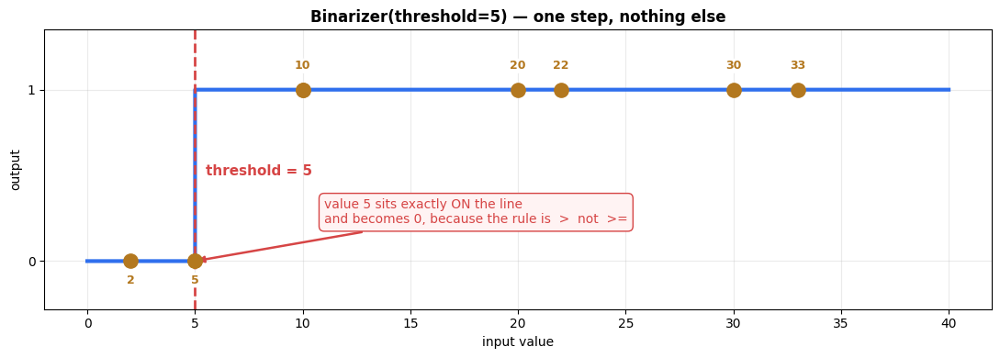<figcaption>Output from this notebook.</figcaption></figure>
<hr />
<h2 id="s-4-normalizer-the-one-that-works-on-rows">4. Normalizer — the one that works on ROWS</h2>
<p>This is the single most misread class in <code>sklearn.preprocessing</code>, so it gets stated
loudly:</p>
<div class="note"><div class="h">Note</div><p><strong>Every scaler so far worked down a COLUMN. <code>Normalizer</code> works across a ROW.</strong></p>
</div>
<div class="code"><pre>   StandardScaler / MinMaxScaler / RobustScaler        Normalizer
   ────────────────────────────────────────────        ──────────────────────────
        A     B     C                                       A     B     C
      ┌───┐ ┌───┐ ┌───┐                                  ┌─────────────────┐
      │ ↓ │ │ ↓ │ │ ↓ │   one column at a time           │ ────────────→   │  one row
      │ ↓ │ │ ↓ │ │ ↓ │   columns never mix              ├─────────────────┤  at a time
      │ ↓ │ │ ↓ │ │ ↓ │                                  │ ────────────→   │  columns DO mix
      └───┘ └───┘ └───┘                                  └─────────────────┘
</pre></div>
<h2 id="what-it-computes">What it computes</h2>
<p>For each row, divide every value in that row by the <strong>length of the row</strong>:</p>
<div class='formula'>x&#x27;_i = \frac{x_i}{\sqrt{x_1^2 + x_2^2 + \dots + x_n^2}}</div>

<p>The bottom half is the <strong>Euclidean length</strong> of the row, also called the L2 norm — the
same $\sqrt{a^2 + b^2}$ you know from Pythagoras, just with more terms.</p>
<p>After dividing, <strong>every row has length exactly 1</strong>. The row keeps its <em>direction</em> and
loses its <em>size</em>.</p>
<h2 id="why-anyone-would-want-that">Why anyone would want that</h2>
<p>The classic case is <strong>text</strong>. Two documents about the same subject should count as
similar even if one is 200 words and the other is 2,000. Raw word counts make the long
document look enormous. After <code>Normalizer</code>, only the <em>proportions</em> of words survive —
which is the thing you actually wanted to compare.</p>
<p>The next three cells build the formula by hand first, then check it against sklearn.</p>

<div class="code"><div class="code-head"><span>code</span><span class="cell">cell 50</span></div><pre class="py">X = [[5, 2, 3],
     [2, 4, 10],
     [6, 8, 6]]

sss = [np.sqrt(np.sum(np.power(X[i], 2))) for i in range(len(X))]
len(X)</pre></div>
<div class="out"><div class="h">Output</div><pre>3</pre></div>
<h3>Step 1 — the row lengths</h3>
<p><code>np.power(X[i], 2)</code> squares each value in row <code>i</code>, <code>np.sum</code> adds them, <code>np.sqrt</code> takes
the square root. That is the denominator of the formula, computed one row at a time.</p>
<table class="tbl"><thead>
<tr>
  <th>Row</th>
  <th>Values</th>
  <th>$\sqrt{\text{sum of squares}}$</th>
  <th>Length</th>
</tr>
</thead>
<tbody>
<tr>
  <td>0</td>
  <td>5, 2, 3</td>
  <td>$\sqrt{25 + 4 + 9} = \sqrt{38}$</td>
  <td>6.164</td>
</tr>
<tr>
  <td>1</td>
  <td>2, 4, 10</td>
  <td>$\sqrt{4 + 16 + 100} = \sqrt{120}$</td>
  <td>10.954</td>
</tr>
<tr>
  <td>2</td>
  <td>6, 8, 6</td>
  <td>$\sqrt{36 + 64 + 36} = \sqrt{136}$</td>
  <td>11.662</td>
</tr>
</tbody>
</table>
<p>Three rows, three very different lengths. Row 2 is nearly twice as &quot;long&quot; as row 0,
even though its values are not obviously more important.</p>
<p><em>(The cell prints <code>len(X)</code> — that is just the row count, 3. The list <code>sss</code> holds the
three lengths.)</em></p>

<div class="code"><div class="code-head"><span>code</span><span class="cell">cell 52</span></div><pre class="py">np.array([X[k] / sss[k] for k in range(len(X))])</pre></div>
<div class="out"><div class="h">Output</div><pre>array([[0.81110711, 0.32444284, 0.48666426],
       [0.18257419, 0.36514837, 0.91287093],
       [0.51449576, 0.68599434, 0.51449576]])</pre></div>
<h3>Step 2 — divide each row by its own length</h3>
<p><code>X[k] / sss[k]</code> divides every value in row <code>k</code> by that row's length. NumPy broadcasts
the single number across the three values in the row.</p>
<p>Now check the first row: $5/6.164 = 0.811$, $2/6.164 = 0.324$, $3/6.164 = 0.487$.
And $0.811^2 + 0.324^2 + 0.487^2 = 1.0$.</p>
<p>Every row now has length 1. That is the whole transform, written out by hand.</p>

<div class="code"><div class="code-head"><span>code</span><span class="cell">cell 54</span></div><pre class="py">normalizer = Normalizer()
data_tf = normalizer.fit_transform(X)
data_tf</pre></div>
<div class="out"><div class="h">Output</div><pre>array([[0.81110711, 0.32444284, 0.48666426],
       [0.18257419, 0.36514837, 0.91287093],
       [0.51449576, 0.68599434, 0.51449576]])</pre></div>
<h3>Step 3 — the same thing, from the library</h3>
<p>Identical numbers. The hand-written version and <code>Normalizer()</code> agree to the last
decimal, which is the point of doing both.</p>
<p><code>Normalizer</code> is <strong>stateless</strong>, like <code>Binarizer</code> — there is nothing to learn from the
data, because each row is handled entirely on its own. <code>fit()</code> exists only so the class
fits the estimator interface; it does nothing.</p>
<p><code>norm='l2'</code> is the default and is the formula above. Two alternatives exist:</p>
<table class="tbl"><thead>
<tr>
  <th><code>norm</code></th>
  <th>Divides by</th>
  <th>Effect</th>
</tr>
</thead>
<tbody>
<tr>
  <td><code>'l2'</code></td>
  <td>$\sqrt{\sum x_i^2}$</td>
  <td>row length becomes 1 (default)</td>
</tr>
<tr>
  <td><code>'l1'</code></td>
  <td>$\sum \lvert x_i \rvert$</td>
  <td>the row <strong>sums</strong> to 1 — the values become proportions</td>
</tr>
<tr>
  <td><code>'max'</code></td>
  <td>$\max \lvert x_i \rvert$</td>
  <td>the biggest value in the row becomes 1</td>
</tr>
</tbody>
</table>

<div class="code"><div class="code-head"><span>code</span><span class="cell">cell 56</span></div><pre class="py"># why &quot;length 1&quot; is easier to see with two columns than three
pts = np.array([[5., 2.], [2., 4.], [6., 8.], [1., 0.5], [3., 7.]])
pts_n = Normalizer().fit_transform(pts)
arrow_colors = [&quot;#2f6fed&quot;, &quot;#b3781f&quot;, &quot;#7a3f66&quot;, &quot;#2f9e6f&quot;, &quot;#d64545&quot;]

fig, axes = plt.subplots(1, 2, figsize=(12, 5.2))
for ax, (data, title, show_arc) in zip(axes, [(pts,   &quot;BEFORE — every row a different length&quot;, False),
                                              (pts_n, &quot;AFTER Normalizer — every row length 1&quot;, True)]):
    for i, (px, py) in enumerate(data):
        ax.annotate(&quot;&quot;, xy=(px, py), xytext=(0, 0),
                    arrowprops=dict(arrowstyle=&quot;-|&gt;&quot;, lw=2.2, color=arrow_colors[i],
                                    shrinkA=0, shrinkB=0))
        ax.text(px, py, f&quot;  row {i}  (len {np.hypot(px, py):.2f})&quot;, fontsize=8.5,
                color=arrow_colors[i], va=&quot;center&quot;)
    if show_arc:
        th = np.linspace(0, np.pi / 2, 200)
        ax.plot(np.cos(th), np.sin(th), ls=&quot;--&quot;, color=&quot;#8a8f98&quot;, lw=1.4)
        ax.text(1.03, 0.62, &quot;the unit circle\n(every arrow ends here)&quot;,
                fontsize=9, color=&quot;#8a8f98&quot;)
    ax.set_aspect(&quot;equal&quot;)
    ax.grid(alpha=0.25)
    ax.set_title(title, fontweight=&quot;bold&quot;, fontsize=11)
    ax.set_xlabel(&quot;column 0&quot;)
    ax.set_ylabel(&quot;column 1&quot;)

axes[0].set_xlim(-0.4, 10.5); axes[0].set_ylim(-0.4, 9)
axes[1].set_xlim(-0.1, 1.6);  axes[1].set_ylim(-0.1, 1.25)

fig.suptitle(&quot;Normalizer keeps each row&#x27;s DIRECTION and throws away its SIZE&quot;,
             fontsize=13, fontweight=&quot;bold&quot;)
plt.tight_layout()
plt.show()</pre></div>
<figure class="shot">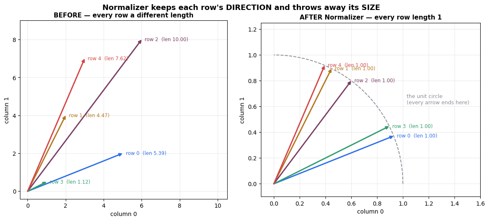<figcaption>Output from this notebook.</figcaption></figure>
<p>Every arrow keeps the angle it started with and gets trimmed to the dashed circle.</p>
<p><strong>The angle is the information Normalizer protects. The length is the information it
deletes.</strong> If two rows pointed the same way before, they are now <em>the same point</em>.</p>
<p>That is why it suits text, and why it is wrong for something like <code>[age, salary]</code> — you
would be declaring that a 30-year-old earning ₹300,000 is identical to a 60-year-old
earning ₹600,000, because both rows point in the same direction.</p>
<h3>The rule</h3>
<table class="tbl"><thead>
<tr>
  <th>You want to compare</th>
  <th>Use</th>
</tr>
</thead>
<tbody>
<tr>
  <td>columns against each other</td>
  <td><code>StandardScaler</code> / <code>MinMaxScaler</code> / <code>RobustScaler</code></td>
</tr>
<tr>
  <td>rows against each other, by direction only</td>
  <td><code>Normalizer</code></td>
</tr>
</tbody>
</table>
<p>They are not alternatives. They answer different questions, and a text pipeline often
uses both.</p>

<hr />
<h2 id="s-5-encoding-turning-text-into-numbers">5. Encoding — turning text into numbers</h2>
<p>Scaling fixed columns that were <em>numbers in the wrong units</em>. Encoding fixes columns
that are <strong>not numbers at all</strong>.</p>
<p>Every scikit-learn model multiplies its inputs by weights. <code>&quot;Mumbai&quot;</code> cannot be
multiplied. So before any model runs, every text column has to become numeric — and
<strong>how</strong> you do that changes what the model believes.</p>
<p>The file below has a <code>TEAM</code> column holding <code>A</code>, <code>B</code>, <code>C</code>, <code>D</code>.</p>

<div class="code"><div class="code-head"><span>code</span><span class="cell">cell 59</span></div><pre class="py">dff = pd.read_csv(&quot;../../../01_Python/03_Pandas/Data/encoding.csv&quot;)
dff</pre></div>
<div class="out"><div class="h">Output</div><pre>  TEAM  YEAR
0    A  2000
1    B  2002
2    C  2003
3    D  2004
4    A  2005
5    C  2006
6    B  2007
7    A  2008
8    D  2009</pre></div>
<p>Nine rows, two columns. <code>TEAM</code> is text, <code>YEAR</code> is already a number.</p>
<p><code>TEAM</code> has four distinct labels — <code>A</code>, <code>B</code>, <code>C</code>, <code>D</code> — and some of them repeat.
The number of distinct labels is called the <strong>cardinality</strong>, and it is the main thing
that decides which encoder to use.</p>
<div class="note"><div class="h">Note</div><p>💡 <strong>Engineering Extension</strong> — <em>Recommended Extension - Not part of instructor curriculum</em></p>
<p>The path in the cell above is absolute, so the notebook only runs on this machine.
A relative path — <code>&quot;../../../01_Python/03_Pandas/Data/encoding.csv&quot;</code> — works for anyone who clones
the repository. Same idea as a classpath resource instead of <code>/home/me/config.yml</code>.</p>
</div>

<h2 id="s-5-1-labelencoder-one-number-per-label">5.1 LabelEncoder — one number per label</h2>
<p><code>LabelEncoder</code> sorts the distinct labels alphabetically and hands out integers starting
at 0:</p>
<div class="code"><pre>   &#x27;A&#x27; → 0        &#x27;B&#x27; → 1        &#x27;C&#x27; → 2        &#x27;D&#x27; → 3
</pre></div>
<p>The mapping is stored in <code>le.classes_</code>, where the <strong>integer is the position in that
array</strong> — the same rule you met with <code>iris.target_names</code>.</p>
<p>Two things about the next cell are worth pausing on, and both are covered underneath it.</p>

<div class="code"><div class="code-head"><span>code</span><span class="cell">cell 62</span></div><pre class="py">le = LabelEncoder()
df1 = dff
df1.TEAM = le.fit_transform(df1.TEAM)
df1</pre></div>
<div class="out"><div class="h">Output</div><pre>   TEAM  YEAR
0     0  2000
1     1  2002
2     2  2003
3     3  2004
4     0  2005
5     2  2006
6     1  2007
7     0  2008
8     3  2009</pre></div>
<h3>Gotcha 1 — <code>df1 = dff</code> did not make a copy</h3>
<div class="code"><pre class="py">df1 = dff          # this does NOT copy anything
</pre></div>
<p>In Python, <code>=</code> binds a <strong>new name to the same object</strong>. <code>df1</code> and <code>dff</code> are now two
labels on one DataFrame. So <code>df1.TEAM = ...</code> also changed <code>dff</code>, and the original text
column is gone from both.</p>
<p>Backend analogy: <code>List&lt;Row&gt; b = a;</code> in Java. You did not clone the list; you now have
two references to it. <code>dff.copy()</code> is the <code>new ArrayList&lt;&gt;(a)</code> of Pandas.</p>
<p>Scroll up and re-run the <code>dff</code> cell — it prints numbers now, not letters.</p>
<h3>Gotcha 2 — <code>LabelEncoder</code> was not built for input columns</h3>
<p>The class is documented as <em>&quot;Encode target labels with value between 0 and n_classes-1&quot;</em>.
<strong>Target labels.</strong> It takes a 1-D array, not a table, which is the API telling you the
same thing.</p>
<p>Using it on an input feature creates a problem the next section is entirely about.
The next cell shows what <code>fit</code> stored.</p>

<div class="code"><div class="code-head"><span>code</span><span class="cell">cell 64</span></div><pre class="py">print(&quot;le.classes_ :&quot;, le.classes_)
print(&quot;the integer a label gets IS its index in that array:&quot;)
for i, label in enumerate(le.classes_):
    print(f&quot;   position {i}  -&gt;  &#x27;{label}&#x27;&quot;)
print()

# gotcha 1, demonstrated rather than asserted
print(&quot;df1 is dff  -&gt;&quot;, df1 is dff, &quot;  (two names, one object — that is why dff changed too)&quot;)
print()
print(&quot;dff now holds:&quot;)
print(dff.head(3))
print()

# going back from numbers to labels
print(&quot;inverse_transform([0, 1, 2, 3]) -&gt;&quot;, le.inverse_transform([0, 1, 2, 3]))</pre></div>
<div class="out"><div class="h">Output</div><pre>le.classes_ : [&#x27;A&#x27; &#x27;B&#x27; &#x27;C&#x27; &#x27;D&#x27;]
the integer a label gets IS its index in that array:
   position 0  -&gt;  &#x27;A&#x27;
   position 1  -&gt;  &#x27;B&#x27;
   position 2  -&gt;  &#x27;C&#x27;
   position 3  -&gt;  &#x27;D&#x27;

df1 is dff  -&gt; True   (two names, one object — that is why dff changed too)

dff now holds:
   TEAM  YEAR
0     0  2000
1     1  2002
2     2  2003

inverse_transform([0, 1, 2, 3]) -&gt; [&#x27;A&#x27; &#x27;B&#x27; &#x27;C&#x27; &#x27;D&#x27;]</pre></div>
<hr />
<h2 id="s-5-2-onehotencoder-and-the-problem-it-exists-to-s">5.2 OneHotEncoder — and the problem it exists to solve</h2>
<h3>The problem with the numbers we just created</h3>
<p>After <code>LabelEncoder</code>, the <code>TEAM</code> column holds <code>0, 1, 2, 3</code>. A model does not know these
came from letters. It reads them as <strong>quantities</strong>, and quantities support arithmetic:</p>
<div class="code"><pre>   D (3)  &gt;  C (2)  &gt;  B (1)  &gt;  A (0)      ← the model now believes team D is &quot;more&quot; than team A
   (A + C) / 2  =  1  =  B                  ← and that B is the average of A and C
   D - A  =  3      B - A  =  1             ← and that D is three times further from A than B is
</pre></div>
<p>Every one of those statements is invented. Nothing in the data says team D outranks
team A. <code>LabelEncoder</code> manufactured a <strong>fake ordering</strong>, and a linear model or a
distance-based model will use it.</p>
<h3>The fix</h3>
<p>Give every label its <strong>own column</strong>, holding 1 if the row is that label and 0 otherwise:</p>
<div class="code"><pre>   TEAM            TEAM_A  TEAM_B  TEAM_C  TEAM_D
   ────            ──────  ──────  ──────  ──────
    A       →        1       0       0       0
    B       →        0       1       0       0
    C       →        0       0       1       0
    D       →        0       0       0       1
</pre></div>
<p>Now <strong>every pair of labels is exactly the same distance apart</strong>. No label is bigger than
another, because they no longer live on one axis. One column became four, and that is
the price.</p>
<h3>When <em>not</em> to one-hot</h3>
<table class="tbl"><thead>
<tr>
  <th>Situation</th>
  <th>Better choice</th>
</tr>
</thead>
<tbody>
<tr>
  <td>the labels have a <strong>real order</strong> (<code>low &lt; medium &lt; high</code>)</td>
  <td><code>OrdinalEncoder</code> — the order is genuine information, keep it</td>
</tr>
<tr>
  <td><strong>hundreds</strong> of distinct labels (pin codes, product IDs)</td>
  <td>target / frequency encoding — one-hot would add hundreds of columns</td>
</tr>
<tr>
  <td>you are training a <strong>tree</strong> model</td>
  <td>trees split on <code>== value</code>, so the fake order does not hurt them much</td>
</tr>
</tbody>
</table>
<h3>About the next cell</h3>
<p><code>OneHotEncoder</code> returns a <strong>sparse matrix</strong> by default — a memory-saving format that
only stores the positions of the 1s. <code>.toarray()</code> converts it to a normal dense NumPy
array so Pandas can read it. Passing <code>sparse_output=False</code> to the constructor does the
same thing up front.</p>
<p>Also note <code>df1[['TEAM']]</code> with <strong>double</strong> brackets. <code>OneHotEncoder</code> needs a 2-D input.
Single brackets give a 1-D Series and raise an error.</p>

<div class="code"><div class="code-head"><span>code</span><span class="cell">cell 66</span></div><pre class="py">enc = OneHotEncoder()
enc_df1 = pd.DataFrame(enc.fit_transform(df1[[&#x27;TEAM&#x27;]]).toarray())
enc_df1</pre></div>
<div class="out"><div class="h">Output</div><pre>     0    1    2    3
0  1.0  0.0  0.0  0.0
1  0.0  1.0  0.0  0.0
2  0.0  0.0  1.0  0.0
3  0.0  0.0  0.0  1.0
4  1.0  0.0  0.0  0.0
5  0.0  0.0  1.0  0.0
6  0.0  1.0  0.0  0.0
7  1.0  0.0  0.0  0.0
8  0.0  0.0  0.0  1.0</pre></div>
<p>Four columns for four teams, and exactly one <code>1</code> per row.</p>
<p>The column names came out as <code>0, 1, 2, 3</code>, which tells you nothing about which team is
which. <code>sklearn</code> can supply real names — the next cell shows that, and the <code>drop</code> option.</p>

<div class="code"><div class="code-head"><span>code</span><span class="cell">cell 68</span></div><pre class="py"># `dff` was overwritten in the cell above (gotcha 1), so the letters are gone.
# re-read the file to get them back — and note the RELATIVE path this time.
fresh = pd.read_csv(&quot;../../../01_Python/03_Pandas/Data/encoding.csv&quot;)

enc_named = OneHotEncoder(sparse_output=False)
matrix = enc_named.fit_transform(fresh[[&quot;TEAM&quot;]])

print(&quot;categories_             :&quot;, enc_named.categories_)
print(&quot;get_feature_names_out() :&quot;, enc_named.get_feature_names_out())
print()

named = pd.DataFrame(matrix, columns=enc_named.get_feature_names_out(), dtype=int)
print(named.head(4))
print()

# drop=&#x27;first&#x27; — the &quot;dummy variable trap&quot; option
enc_drop = OneHotEncoder(sparse_output=False, drop=&quot;first&quot;)
dropped = pd.DataFrame(enc_drop.fit_transform(fresh[[&quot;TEAM&quot;]]),
                       columns=enc_drop.get_feature_names_out(), dtype=int)
print(&quot;with drop=&#x27;first&#x27; — 3 columns instead of 4:&quot;)
print(dropped.head(4))</pre></div>
<div class="out"><div class="h">Output</div><pre>categories_             : [array([&#x27;A&#x27;, &#x27;B&#x27;, &#x27;C&#x27;, &#x27;D&#x27;], dtype=object)]
get_feature_names_out() : [&#x27;TEAM_A&#x27; &#x27;TEAM_B&#x27; &#x27;TEAM_C&#x27; &#x27;TEAM_D&#x27;]

   TEAM_A  TEAM_B  TEAM_C  TEAM_D
0       1       0       0       0
1       0       1       0       0
2       0       0       1       0
3       0       0       0       1

with drop=&#x27;first&#x27; — 3 columns instead of 4:
   TEAM_B  TEAM_C  TEAM_D
0       0       0       0
1       1       0       0
2       0       1       0
3       0       0       1</pre></div>
<p>Now the columns are called <code>TEAM_A</code> … <code>TEAM_D</code>, which survive into the final table and
still mean something six months later.</p>
<h3>Why <code>drop='first'</code> exists</h3>
<p>With all four columns present, the fourth is redundant: if <code>TEAM_A</code>, <code>TEAM_B</code> and
<code>TEAM_C</code> are all 0, the row <strong>must</strong> be team D. The four columns always add up to 1,
so one of them is fully predictable from the other three.</p>
<p>That perfect redundancy is called the <strong>dummy variable trap</strong>, and it makes a linear
model's coefficients unstable — there are infinitely many weight combinations that give
the same prediction, so the fitted numbers become meaningless individually.</p>
<table class="tbl"><thead>
<tr>
  <th>Model</th>
  <th>Use <code>drop='first'</code>?</th>
</tr>
</thead>
<tbody>
<tr>
  <td>Linear / Logistic Regression, and anything reading coefficients</td>
  <td><strong>yes</strong></td>
</tr>
<tr>
  <td>Regularised models (Ridge, Lasso), trees, neural nets</td>
  <td>not required — regularisation or the split rule handles it</td>
</tr>
</tbody>
</table>

<div class="code"><div class="code-head"><span>code</span><span class="cell">cell 70</span></div><pre class="py">fig, axes = plt.subplots(1, 2, figsize=(13, 4.8))

# LEFT — LabelEncoder puts the four teams on one axis, which invents an order
ax = axes[0]
ax.axhline(0, color=&quot;#d64545&quot;, lw=2.5)
for i, label in enumerate(le.classes_):
    ax.plot(i, 0, &quot;o&quot;, ms=16, color=&quot;#d64545&quot;, zorder=3)
    ax.annotate(f&quot;{label}&quot;, xy=(i, 0), xytext=(i, 0.28), ha=&quot;center&quot;,
                fontsize=13, fontweight=&quot;bold&quot;, color=&quot;#d64545&quot;)
    ax.annotate(f&quot;{i}&quot;, xy=(i, 0), xytext=(i, -0.35), ha=&quot;center&quot;, fontsize=11, color=&quot;#8a8f98&quot;)
ax.annotate(&quot;&quot;, xy=(3, 0.13), xytext=(0, 0.13),
            arrowprops=dict(arrowstyle=&quot;&lt;-&gt;&quot;, lw=1.6, color=&quot;#d64545&quot;))
ax.text(1.5, 0.17, &quot;the model reads this gap as 3&quot;, ha=&quot;center&quot;, fontsize=9.5,
        color=&quot;#d64545&quot;, fontweight=&quot;bold&quot;)
ax.text(1.5, -0.62, &quot;INVENTED:  D &gt; C &gt; B &gt; A,  and B is the average of A and C&quot;,
        ha=&quot;center&quot;, fontsize=10, color=&quot;#d64545&quot;, fontweight=&quot;bold&quot;,
        bbox=dict(boxstyle=&quot;round,pad=0.4&quot;, fc=&quot;#fff3f3&quot;, ec=&quot;#d64545&quot;))
ax.set_xlim(-0.8, 3.8); ax.set_ylim(-0.85, 0.55)
ax.set_yticks([]); ax.set_xticks([])
ax.spines[[&quot;top&quot;, &quot;right&quot;, &quot;left&quot;, &quot;bottom&quot;]].set_visible(False)
ax.set_title(&quot;LabelEncoder — one axis, so an order appears from nowhere&quot;,
             fontweight=&quot;bold&quot;, fontsize=11.5)

# RIGHT — OneHotEncoder gives each team its own column, so all pairs are equidistant
ax = axes[1]
grid = np.eye(4)
ax.imshow(grid, cmap=&quot;Blues&quot;, vmin=-0.4, vmax=1.4)
for r in range(4):
    for c in range(4):
        ax.text(c, r, int(grid[r, c]), ha=&quot;center&quot;, va=&quot;center&quot;, fontsize=13,
                fontweight=&quot;bold&quot;, color=&quot;white&quot; if grid[r, c] else &quot;#1b1f24&quot;)
ax.set_xticks(range(4), [f&quot;TEAM_{t}&quot; for t in le.classes_], fontsize=10)
ax.set_yticks(range(4), [f&quot;row = {t}&quot; for t in le.classes_], fontsize=10)
ax.set_title(&quot;OneHotEncoder — four axes, so every pair is equally far apart&quot;,
             fontweight=&quot;bold&quot;, fontsize=11.5)
ax.text(1.5, 4.15, &quot;NO invented order — the distance between any two teams is the same&quot;,
        ha=&quot;center&quot;, fontsize=10, color=&quot;#2f9e6f&quot;, fontweight=&quot;bold&quot;,
        bbox=dict(boxstyle=&quot;round,pad=0.4&quot;, fc=&quot;#eaf7f1&quot;, ec=&quot;#2f9e6f&quot;))

plt.tight_layout()
plt.show()</pre></div>
<figure class="shot">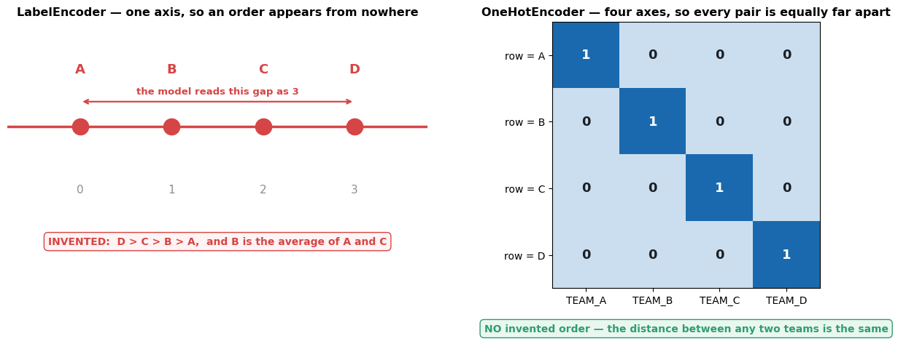<figcaption>Output from this notebook.</figcaption></figure>
<div class="code"><div class="code-head"><span>code</span><span class="cell">cell 71</span></div><pre class="py">abc = df1.join(enc_df1)
abc</pre></div>
<div class="out"><div class="h">Output</div><pre>   TEAM  YEAR    0    1    2    3
0     0  2000  1.0  0.0  0.0  0.0
1     1  2002  0.0  1.0  0.0  0.0
2     2  2003  0.0  0.0  1.0  0.0
3     3  2004  0.0  0.0  0.0  1.0
4     0  2005  1.0  0.0  0.0  0.0
5     2  2006  0.0  0.0  1.0  0.0
6     1  2007  0.0  1.0  0.0  0.0
7     0  2008  1.0  0.0  0.0  0.0
8     3  2009  0.0  0.0  0.0  1.0</pre></div>
<h3>What <code>join</code> did</h3>
<p><code>df1.join(enc_df1)</code> glues the two tables side by side <strong>by index</strong>. Both have the
default <code>RangeIndex</code> <code>0…8</code>, so row 0 meets row 0 and everything lines up.</p>
<p>That alignment is not guaranteed in general. If <code>df1</code> had been filtered — say
<code>df1[df1.YEAR &gt; 2004]</code> — its index would be <code>4,5,6,7,8</code> while the encoder output still
starts at 0, and <code>join</code> would produce <code>NaN</code> for the rows that do not match.</p>
<p>Safe habits: <code>.reset_index(drop=True)</code> on both sides before joining, or
<code>pd.concat([df1, enc_df1], axis=1)</code>, or skip the whole problem with a
<code>ColumnTransformer</code> (shown at the end of this notebook).</p>

<div class="code"><div class="code-head"><span>code</span><span class="cell">cell 73</span></div><pre class="py">final = abc.drop([&#x27;TEAM&#x27;], axis=&#x27;columns&#x27;)
final</pre></div>
<div class="out"><div class="h">Output</div><pre>   YEAR    0    1    2    3
0  2000  1.0  0.0  0.0  0.0
1  2002  0.0  1.0  0.0  0.0
2  2003  0.0  0.0  1.0  0.0
3  2004  0.0  0.0  0.0  1.0
4  2005  1.0  0.0  0.0  0.0
5  2006  0.0  0.0  1.0  0.0
6  2007  0.0  1.0  0.0  0.0
7  2008  1.0  0.0  0.0  0.0
8  2009  0.0  0.0  0.0  1.0</pre></div>
<h3>The finished table</h3>
<p>The original <code>TEAM</code> column is dropped because its information now lives in the four
<code>0/1</code> columns. Keeping both would feed the model the same fact twice — once in the
honest form and once in the fake-ordered form.</p>
<p><code>YEAR</code> is left untouched, and in a real pipeline it would still need scaling: values
around 2000 next to values of 0 and 1 is exactly the unit mismatch this notebook
started with.</p>
<p><strong>The full recipe for a mixed table:</strong></p>
<div class="code"><pre>   numeric columns  →  a scaler
   text columns     →  an encoder
   join the two halves back together
</pre></div>
<p>Doing that by hand is what the last four cells did. <code>ColumnTransformer</code> does it in one
object, and the closing section shows how.</p>

<hr />
<h2 id="s-6-when-should-i-use-which-the-decision-chart">6. When should I use which? — the decision chart</h2>
<p>Everything above, as one picture.</p>

<div class="code"><div class="code-head"><span>code</span><span class="cell">cell 76</span></div><pre class="py">from matplotlib.patches import FancyBboxPatch

BLUE, BRASS, GREEN, RED, GREY = &quot;#2f6fed&quot;, &quot;#b3781f&quot;, &quot;#2f9e6f&quot;, &quot;#d64545&quot;, &quot;#8a8f98&quot;

fig, ax = plt.subplots(figsize=(15, 9))
ax.set_xlim(0, 120); ax.set_ylim(0, 100); ax.axis(&quot;off&quot;)

def box(x, y, w, h, text, fc=&quot;#ffffff&quot;, ec=GREY, fs=10, bold=False):
    ax.add_patch(FancyBboxPatch((x - w / 2, y - h / 2), w, h,
                                boxstyle=&quot;round,pad=0,rounding_size=1.5&quot;,
                                fc=fc, ec=ec, lw=2, zorder=2))
    ax.text(x, y, text, ha=&quot;center&quot;, va=&quot;center&quot;, fontsize=fs, zorder=3,
            fontweight=&quot;bold&quot; if bold else &quot;normal&quot;, color=&quot;#1b1f24&quot;, linespacing=1.45)
    return (x, y, w, h)

def arrow(a, b, label=&quot;&quot;, color=GREY):
    x1, y1, _, h1 = a
    x2, y2, _, h2 = b
    ax.annotate(&quot;&quot;, xy=(x2, y2 + h2 / 2), xytext=(x1, y1 - h1 / 2),
                arrowprops=dict(arrowstyle=&quot;-|&gt;&quot;, lw=2, color=color, shrinkA=1, shrinkB=1), zorder=1)
    if label:
        ax.text((x1 + x2) / 2, (y1 - h1 / 2 + y2 + h2 / 2) / 2, label,
                ha=&quot;center&quot;, va=&quot;center&quot;, fontsize=9.5, fontweight=&quot;bold&quot;, color=color,
                bbox=dict(boxstyle=&quot;round,pad=0.3&quot;, fc=&quot;white&quot;, ec=color, lw=1.2), zorder=4)

root = box(60, 94, 46, 8, &quot;Which preprocessing do I use for THIS column?&quot;,
           fc=&quot;#eef3ff&quot;, ec=BLUE, bold=True, fs=13)
qcat = box(25, 77, 32, 8, &quot;TEXT / CATEGORY\nteam, city, yes-no&quot;, fc=&quot;#fdf4e6&quot;, ec=BRASS, bold=True, fs=11)
qnum = box(92, 77, 32, 8, &quot;NUMBER\nage, salary, pixel&quot;, fc=&quot;#eef3ff&quot;, ec=BLUE, bold=True, fs=11)
arrow(root, qcat, &quot;text&quot;, BRASS)
arrow(root, qnum, &quot;numeric&quot;, BLUE)

qord = box(25, 60, 34, 8, &quot;Do the labels have a\nnatural order?&quot;, ec=BRASS)
qout = box(92, 60, 34, 8, &quot;Does the column have\nextreme outliers?&quot;, ec=BLUE)
arrow(qcat, qord)
arrow(qnum, qout)

e1 = box(9, 40, 17, 11, &quot;OrdinalEncoder\nlow &lt; mid &lt; high\nkeeps the order&quot;, fc=&quot;#fdf4e6&quot;, ec=BRASS, fs=9.5)
e2 = box(36, 40, 20, 11, &quot;OneHotEncoder\none 0/1 column\nper label&quot;, fc=&quot;#fdf4e6&quot;, ec=BRASS, fs=9.5)
arrow(qord, e1, &quot;yes&quot;, BRASS)
arrow(qord, e2, &quot;no&quot;, BRASS)

s1 = box(110, 40, 17, 11, &quot;RobustScaler\nmedian &amp; IQR\noutliers ignored&quot;, fc=&quot;#eaf7f1&quot;, ec=GREEN, fs=9.5)
qbox = box(76, 40, 30, 11, &quot;Do you need every value\nsquashed inside a\nfixed 0 to 1 box?&quot;, ec=BLUE)
arrow(qout, s1, &quot;yes&quot;, GREEN)
arrow(qout, qbox, &quot;no&quot;, BLUE)

s2 = box(60, 19, 24, 11, &quot;MinMaxScaler\nneural nets, images,\nbounded features&quot;, fc=&quot;#eef3ff&quot;, ec=BLUE, fs=9.5)
s3 = box(93, 19, 26, 11, &quot;StandardScaler\nTHE DEFAULT\nlinear, SVM, KNN, PCA&quot;, fc=&quot;#eef3ff&quot;, ec=BLUE, fs=9.5)
arrow(qbox, s2, &quot;yes&quot;, BLUE)
arrow(qbox, s3, &quot;no&quot;, BLUE)

box(23, 19, 34, 11, &quot;LabelEncoder\nis for the TARGET y only.\nNever for an input column.&quot;,
    fc=&quot;#fff3f3&quot;, ec=RED, fs=9.5, bold=True)
box(60, 4, 112, 6,
    &quot;Tree models — DecisionTree, RandomForest, XGBoost — need NO scaling at all. Encoding is still required.&quot;,
    fc=&quot;#f4f5f7&quot;, ec=GREY, fs=11, bold=True)

plt.show()</pre></div>
<figure class="shot">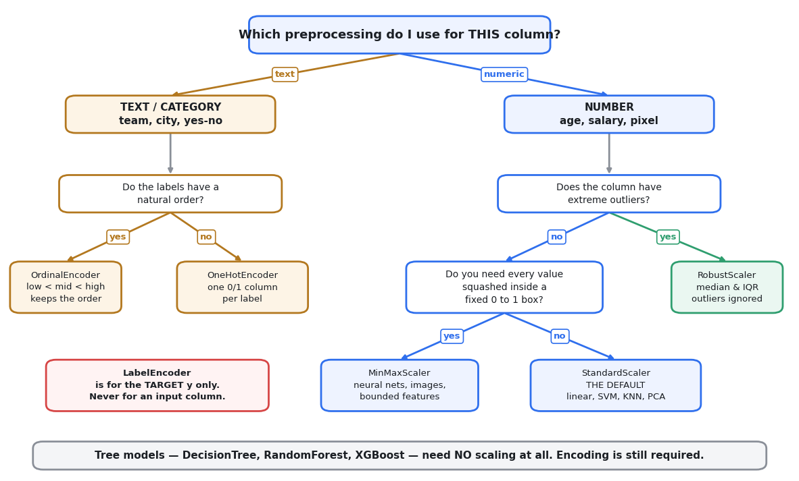<figcaption>Output from this notebook.</figcaption></figure>
<h3>The same chart as text</h3>
<div class="code"><div class="code-head"><span>flow diagram (rendered in the notebook)</span></div><pre class="flow">flowchart TD
    A[A column in your table] --&gt; B{Is it a number?}

    B -- no, it is text --&gt; C{Do the labels&lt;br/&gt;have a real order?}
    C -- yes, low &amp;lt; mid &amp;lt; high --&gt; D[OrdinalEncoder]
    C -- no, just names --&gt; E{How many&lt;br/&gt;distinct labels?}
    E -- a few --&gt; F[OneHotEncoder]
    E -- hundreds --&gt; G[target / frequency encoding]

    B -- yes, it is numeric --&gt; H{Does the model&lt;br/&gt;care about scale?}
    H -- &quot;no: tree, forest, XGBoost&quot; --&gt; I[leave it alone]
    H -- &quot;yes: linear, SVM, KNN, PCA, NN&quot; --&gt; J{Are there&lt;br/&gt;extreme outliers?}
    J -- yes --&gt; K[RobustScaler]
    J -- no --&gt; L{Need a fixed&lt;br/&gt;0 to 1 range?}
    L -- &quot;yes: images, neural nets&quot; --&gt; M[MinMaxScaler]
    L -- no --&gt; N[StandardScaler]

    style D fill:#fdf4e6,stroke:#b3781f
    style F fill:#fdf4e6,stroke:#b3781f
    style G fill:#fdf4e6,stroke:#b3781f
    style I fill:#f4f5f7,stroke:#8a8f98
    style K fill:#eaf7f1,stroke:#2f9e6f
    style M fill:#eef3ff,stroke:#2f6fed
    style N fill:#eef3ff,stroke:#2f6fed
</pre></div>
<h2 id="the-master-table">The master table</h2>
<table class="tbl"><thead>
<tr>
  <th>Class</th>
  <th>Formula</th>
  <th>Guarantees</th>
  <th>Outlier-safe?</th>
  <th>Works on</th>
  <th>Reach for it when</th>
</tr>
</thead>
<tbody>
<tr>
  <td><code>StandardScaler</code></td>
  <td>$(x-\mu)/\sigma$</td>
  <td>mean 0, std 1</td>
  <td>❌ no</td>
  <td>columns</td>
  <td><strong>the default.</strong> Linear/logistic, SVM, KNN, PCA, neural nets</td>
</tr>
<tr>
  <td><code>MinMaxScaler</code></td>
  <td>$(x-x_{min})/(x_{max}-x_{min})$</td>
  <td>min 0, max 1</td>
  <td>❌ <strong>worst</strong></td>
  <td>columns</td>
  <td>a fixed range is required — images, neural-net inputs</td>
</tr>
<tr>
  <td><code>RobustScaler</code></td>
  <td>$(x-Q_2)/IQR$</td>
  <td>median 0, IQR 1</td>
  <td>✅ yes</td>
  <td>columns</td>
  <td>the column has outliers you cannot delete</td>
</tr>
<tr>
  <td><code>Binarizer</code></td>
  <td>$x &gt; t \rightarrow 1$ else $0$</td>
  <td>values are 0 or 1</td>
  <td>n/a</td>
  <td>cells</td>
  <td>you only care <em>whether</em> something crossed a line</td>
</tr>
<tr>
  <td><code>Normalizer</code></td>
  <td>$x / \lVert x \rVert_2$</td>
  <td>every <strong>row</strong> has length 1</td>
  <td>n/a</td>
  <td><strong>rows</strong></td>
  <td>comparing rows by direction — text, TF-IDF</td>
</tr>
<tr>
  <td><code>LabelEncoder</code></td>
  <td>label → its index</td>
  <td>integers 0…n−1</td>
  <td>n/a</td>
  <td>1-D <code>y</code></td>
  <td>encoding the <strong>target</strong>, never an input</td>
</tr>
<tr>
  <td><code>OneHotEncoder</code></td>
  <td>label → its own 0/1 column</td>
  <td>no invented order</td>
  <td>n/a</td>
  <td>columns</td>
  <td>a text input column with few distinct labels</td>
</tr>
</tbody>
</table>
<h2 id="five-mistakes-to-avoid">Five mistakes to avoid</h2>
<ol>
<li><p><strong>Fitting the scaler on the whole dataset, then splitting.</strong>
The scaler's mean and min then contain information from the test rows. The score
looks great and the deployed model disappoints. This is <strong>data leakage</strong>, and it is
the most common way a beginner's model flatters itself. Split first, always.</p>
</li>
<li><p><strong>Calling <code>fit_transform</code> on the test set.</strong>
<code>fit_transform</code> on train, <code>transform</code> on test. Fitting again on test gives the test
set its <em>own</em> mean and min, so train and test end up on two different rulers.</p>
</li>
<li><p><strong>Using <code>LabelEncoder</code> on an input column.</strong>
It invents an order that is not in the data. Use <code>OneHotEncoder</code> (no order) or
<code>OrdinalEncoder</code> (a real order you specify).</p>
</li>
<li><p><strong>Reaching for <code>MinMaxScaler</code> by default.</strong>
It is the most fragile of the three. One bad value flattens the whole column, as
section 2.6 measured.</p>
</li>
<li><p><strong>Expecting a scaler to fix skew or delete outliers.</strong>
It cannot. It only moves and stretches. For skew you need a <em>shape-changing</em>
transform — <code>np.log1p</code>, <code>PowerTransformer</code>, <code>QuantileTransformer</code>.</p>
</li>
</ol>

<hr />
<h2 id="s-7-the-one-habit-that-matters-more-than-picking-t">7. The one habit that matters more than picking the right scaler</h2>
<div class="note"><div class="h">Note</div><p>📘 <strong>Split first. Fit the scaler on train only. Transform both.</strong></p>
</div>
<p>A scaler that computed its mean over the test rows has already seen the future.
The next cell measures how much of a difference that makes.</p>

<div class="code"><div class="code-head"><span>code</span><span class="cell">cell 79</span></div><pre class="py">from sklearn.model_selection import train_test_split

X_train, X_test = train_test_split(raw, test_size=0.2, random_state=42)

# WRONG — the scaler sees every row, including the ones it is about to be tested on
wrong = StandardScaler().fit(raw)

# RIGHT — the scaler only ever sees the training rows
right = StandardScaler().fit(X_train)

print(&quot;mean_ learned from ALL rows   :&quot;, wrong.mean_.round(5))
print(&quot;mean_ learned from TRAIN only :&quot;, right.mean_.round(5))
print(&quot;difference                    :&quot;, (wrong.mean_ - right.mean_).round(5))
print()
print(&quot;scale_ from ALL rows   :&quot;, wrong.scale_.round(5))
print(&quot;scale_ from TRAIN only :&quot;, right.scale_.round(5))
print()
print(&quot;The two rulers are different. On this clean synthetic data the gap is tiny,&quot;)
print(&quot;but on a small or skewed real dataset it is the difference between an honest&quot;)
print(&quot;score and a flattering one.&quot;)</pre></div>
<div class="out"><div class="h">Output</div><pre>mean_ learned from ALL rows   : [-5.90000e-04  5.01057e+00 -4.95491e+00]
mean_ learned from TRAIN only : [ 0.00616  5.00088 -4.96477]
difference                    : [-0.00675  0.00969  0.00987]

scale_ from ALL rows   : [2.0017  3.01579 5.00754]
scale_ from TRAIN only : [1.98886 2.99677 5.01382]

The two rulers are different. On this clean synthetic data the gap is tiny,
but on a small or skewed real dataset it is the difference between an honest
score and a flattering one.</pre></div>
<h3>The version that cannot leak</h3>
<p><code>Pipeline</code> and <code>ColumnTransformer</code> remove the chance of getting this wrong, because
<strong>the scaler lives inside the model object</strong>. When you call <code>pipe.fit(X_train, y_train)</code>,
the scaler is fitted on the training fold only — every time, including inside
cross-validation, with no discipline required from you.</p>
<p>Backend analogy: this is dependency injection instead of <code>new</code>-ing a collaborator inside
a method. The wiring is declared once, and the object cannot be assembled wrongly.</p>

<div class="code"><div class="code-head"><span>code</span><span class="cell">cell 81</span></div><pre class="py">from sklearn.pipeline import Pipeline
from sklearn.compose import ColumnTransformer
from sklearn.linear_model import LogisticRegression

# a small mixed table: two numeric columns and one text column
demo = pd.DataFrame({
    &quot;age&quot;:    [25, 34, 51, 62, 29, 45, 38, 55],
    &quot;salary&quot;: [300000, 480000, 910000, 1200000, 350000, 700000, 520000, 880000],
    &quot;city&quot;:   [&quot;Pune&quot;, &quot;Mumbai&quot;, &quot;Delhi&quot;, &quot;Mumbai&quot;, &quot;Pune&quot;, &quot;Delhi&quot;, &quot;Pune&quot;, &quot;Mumbai&quot;],
})
target = [0, 0, 1, 1, 0, 1, 0, 1]

# one object that says: scale these columns, one-hot those columns
prep = ColumnTransformer([
    (&quot;numeric&quot;, StandardScaler(),                        [&quot;age&quot;, &quot;salary&quot;]),
    (&quot;text&quot;,    OneHotEncoder(handle_unknown=&quot;ignore&quot;),  [&quot;city&quot;]),
])

pipe = Pipeline([
    (&quot;prep&quot;,  prep),
    (&quot;model&quot;, LogisticRegression()),
])

X_tr, X_te, y_tr, y_te = train_test_split(demo, target, test_size=0.25, random_state=0)

pipe.fit(X_tr, y_tr)          # &lt;- the scaler is fitted on X_tr only. Leakage is impossible.
print(&quot;test accuracy :&quot;, pipe.score(X_te, y_te))
print()
print(&quot;columns produced by the preprocessing step:&quot;)
print(pipe.named_steps[&quot;prep&quot;].get_feature_names_out())
print()
print(&quot;what the scaler inside the pipeline learned (from the TRAIN rows only):&quot;)
inner = pipe.named_steps[&quot;prep&quot;].named_transformers_[&quot;numeric&quot;]
print(&quot;  mean_  :&quot;, inner.mean_.round(2))
print(&quot;  scale_ :&quot;, inner.scale_.round(2))</pre></div>
<div class="out"><div class="h">Output</div><pre>test accuracy : 1.0

columns produced by the preprocessing step:
[&#x27;numeric__age&#x27; &#x27;numeric__salary&#x27; &#x27;text__city_Delhi&#x27; &#x27;text__city_Mumbai&#x27;
 &#x27;text__city_Pune&#x27;]

what the scaler inside the pipeline learned (from the TRAIN rows only):
  mean_  : [4.1670000e+01 6.5166667e+05]
  scale_ : [1.3540000e+01 3.1603885e+05]</pre></div>
<h3>Reading that output</h3>
<p><code>get_feature_names_out()</code> shows the full picture: <code>age</code> and <code>salary</code> came through the
scaler with their names intact, and <code>city</code> became three <code>0/1</code> columns. Two input
columns plus one text column became five numeric columns, and nothing was fitted on the
test rows.</p>
<p>The printed accuracy of <code>1.0</code> means nothing — the test set is two rows. The point of
the cell is the <strong>wiring</strong>, not the score.</p>
<p><code>handle_unknown=&quot;ignore&quot;</code> covers the case where a city appears in production that was
never in the training data. Without it, the encoder raises an error at exactly the worst
moment. With it, the unseen city becomes all zeros.</p>
<hr />
<h2 id="interview-view">Interview view</h2>
<ol>
<li><p><strong>&quot;Why does scaling matter for KNN but not for a decision tree?&quot;</strong>
KNN computes distance, so a column with bigger units contributes more to that
distance. A tree only asks &quot;is this value above the split point?&quot;, and the answer to
that question is unchanged by any monotonic rescaling.</p>
</li>
<li><p><strong>&quot;StandardScaler or MinMaxScaler?&quot;</strong>
<code>StandardScaler</code> unless something downstream needs a bounded range — images, or a
neural network. <code>MinMaxScaler</code> is the more fragile of the two because its formula
depends only on the two most extreme values in the column.</p>
</li>
<li><p><strong>&quot;What does <code>RobustScaler</code> do differently?&quot;</strong>
It centres on the median instead of the mean and divides by the IQR instead of the
standard deviation. Both of those are <strong>positions in the sorted data</strong>, so a handful
of extreme values cannot move them.</p>
</li>
<li><p><strong>&quot;Where exactly does data leakage creep in with a scaler?&quot;</strong>
Calling <code>fit</code> (or <code>fit_transform</code>) on data that includes the test rows. The learned
mean and range then encode information from rows the model is about to be scored on.
A <code>Pipeline</code> makes this structurally impossible.</p>
</li>
<li><p><strong>&quot;Why not just use <code>LabelEncoder</code> on every text column?&quot;</strong>
It puts the labels on a single number line, which invents an order and a set of
distances that the data never contained. A linear or distance-based model will use
that invented structure. <code>OneHotEncoder</code> gives each label its own axis instead.</p>
</li>
</ol>
<hr />
<h2 id="key-takeaway">Key takeaway</h2>
<div class="note"><div class="h">Note</div><p><strong>If you remember only one thing:</strong> every scaler on this page is
$x' = \dfrac{x - \text{centre}}{\text{spread}}$ — it <strong>moves and stretches the number
line, and never changes the shape of the data</strong>. Pick the centre and spread by asking
one question, <em>&quot;does this column have outliers?&quot;</em>: no → <code>StandardScaler</code>
(or <code>MinMaxScaler</code> when you need a 0 … 1 box), yes → <code>RobustScaler</code>. Then fit it on
the <strong>training rows only</strong>, ideally from inside a <code>Pipeline</code>, so it can never see the
future.</p>
</div>

<div class="src-head">📓 <a href="../Concept/24_Preprocessing_Concepts.ipynb">24_Preprocessing_Concepts.ipynb</a></div>
<h2 id="preprocessing-explained">🧹 Preprocessing — Explained</h2>
<p><strong>📖 The Story So Far.</strong> A model is only as fair as the numbers we hand it. Today: three columns of sensor-like data (<code>A</code>, <code>B</code>, <code>C</code>) that live at wildly different scales, plus categorical labels, imbalanced classes, missing values, and dates. Raw, all of this would confuse any algorithm. Our job: clean, rescale, and encode — without lying to the model.</p>
<p><strong>🗺️ The Journey</strong></p>
<ol>
<li>⚙️ Setup</li>
<li>📊 The data + why raw scales are a problem</li>
<li>📏 Scaling — <code>StandardScaler</code>, <code>MinMaxScaler</code>, <code>RobustScaler</code></li>
<li>🔲 <code>Binarizer</code> — threshold to 0/1</li>
<li>📐 <code>Normalizer</code> — scaling rows instead of columns</li>
<li>🏷️ Encoders — <code>LabelEncoder</code>, <code>OneHotEncoder</code>, <code>OrdinalEncoder</code></li>
<li>⚖️ Class imbalance — over/under-sampling</li>
<li>🕳️ Missing values — imputation vs deletion</li>
<li>🛠️ Feature engineering — log, interaction, binning, dates</li>
</ol>

<h2 id="setup">⚙️ Setup</h2>
<p><strong>What:</strong> one import line pulling in every tool we use today.
<strong>Why here:</strong> nothing runs without it; each import earns its place below.
<strong>What breaks if skipped:</strong> every cell after this throws <code>NameError</code>.</p>
<ul>
<li><code>numpy</code> — fast array math; the scaler outputs are <code>ndarray</code>, not DataFrames.</li>
<li><code>pandas</code> — the DataFrame wrapper so columns keep names and we can plot.</li>
<li><code>matplotlib.pyplot</code> — the plotting engine behind <code>df.plot.kde()</code>.</li>
<li><code>sklearn.preprocessing</code> — the seven transformers this notebook demos.</li>
</ul>

<div class="code"><div class="code-head"><span>code</span><span class="cell">cell 2</span></div><pre class="py">import numpy as np
import pandas as pd
import matplotlib.pyplot as plt
from sklearn.preprocessing import StandardScaler,MinMaxScaler,RobustScaler,Binarizer,Normalizer,OneHotEncoder,LabelEncoder</pre></div>
<h2 id="the-data-three-columns-that-can-t-see-each-other">📊 The Data — three columns that can't see each other</h2>
<p><strong>What:</strong> generate 10,000 rows × 3 columns, each from a different normal distribution.
<strong>Why here:</strong> we need data where the <em>scale problem</em> is visible before we can feel why scaling exists.
<strong>What breaks if skipped:</strong> every later cell operates on <code>df</code> — no data, no demo.</p>
<ul>
<li><code>A ~ N(mean=0, std=2)</code> — centred near 0, narrow.</li>
<li><code>B ~ N(mean=5, std=3)</code> — shifted up, wider.</li>
<li><code>C ~ N(mean=-5, std=5)</code> — shifted down, widest.</li>
</ul>
<p>Backend analogy: three services reporting latency — one in <strong>ms</strong>, one in <strong>µs</strong>, one in <strong>seconds</strong>. Same quantity, incomparable numbers.</p>

<div class="code"><div class="code-head"><span>code</span><span class="cell">cell 4</span></div><pre class="py">np.random.seed(5)
a = np.random.normal(0, 2, 10000)
b = np.random.normal(5, 3, 10000)
c = np.random.normal(-5, 5, 10000)

df = pd.DataFrame({
    &#x27;A&#x27; : a,
    &#x27;B&#x27; : b,
    &#x27;C&#x27; : c
})
df</pre></div>
<div class="out"><div class="h">Output</div><pre>             A         B          C
0     0.882455  1.466990  -7.089363
1    -0.661740  0.571914  -3.105893
2     4.861542  7.828852  -1.039068
3    -0.504184  5.001904  -9.755722
4     0.219220  1.731128  -7.679528
...        ...       ...        ...
9995 -0.068972  3.739968  -4.303864
9996 -2.167260  0.681434  -9.584910
9997  2.188712  9.860986  -9.986860
9998  0.595445  5.982577 -11.128039
9999  0.122246  9.105143  -6.612080

[10000 rows x 3 columns]</pre></div>
<p><strong>📖 Read the output:</strong> 10,000 rows. Scan row 0 — <code>A≈0.9</code>, <code>B≈1.5</code>, <code>C≈−7.1</code>. Three columns, three different neighbourhoods. Now let's <em>see</em> the shape of each.</p>
<p><strong>What the next cell does:</strong> <code>df.plot.kde()</code> draws a smoothed histogram (KDE = Kernel Density Estimate) per column.
<strong>Why:</strong> numbers in a table hide shape; a density curve shows centre + spread at a glance.
<strong>What breaks if skipped:</strong> you'd scale blind, without a &quot;before&quot; picture to compare against.</p>

<div class="code"><div class="code-head"><span>code</span><span class="cell">cell 6</span></div><pre class="py">df.plot.kde()</pre></div>
<div class="out"><div class="h">Output</div><pre>&lt;Axes: ylabel=&#x27;Density&#x27;&gt;</pre></div>
<figure class="shot">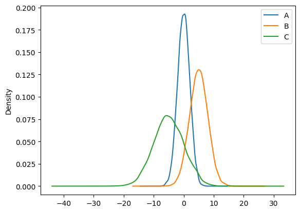<figcaption>Output from this notebook.</figcaption></figure>
<p><strong>👀 What to look at:</strong> three bells at <strong>different x-positions</strong> with <strong>different widths</strong> — <code>A</code> sits near 0 (narrow), <code>B</code> near 5, <code>C</code> near −5 and spread widest. This is the problem in one picture: a distance-based model (KNN, SVM, gradient descent) would treat <code>C</code> as &quot;more important&quot; purely because its numbers are bigger.</p>
<hr />
<h2 id="concept-1-scaling">📏 Concept 1 — Scaling</h2>
<h3>🎬 How we got here</h3>
<p>We just saw three columns that can't be compared fairly.</p>
<h3>😖 The problem</h3>
<p>Models that compare magnitudes get biased toward whichever feature has the biggest raw numbers — not the most <em>informative</em> one, just the biggest.</p>
<h3>💡 The idea</h3>
<p>Rescale every column to a common ruler <strong>without changing its shape</strong>. Like converting all latencies to ms before comparing SLAs. <em>Where the analogy breaks:</em> unit conversion is lossless; some scalers distort distances when outliers exist.</p>
<h3>🔍 What this actually is</h3>
<p>Three scalers, three rulers:</p>
<div class='formula'>z=\frac{x-\mu}{\sigma} \qquad \hat{x}=\frac{x-x_{min}}{x_{max}-x_{min}} \qquad \tilde{x}=\frac{x-Q_2}{Q_3-Q_1}</div>

<ul>
<li>$x$ = one raw value; $\mu,\sigma$ = column mean &amp; std; $x_{min},x_{max}$ = column extremes; $Q_2$ = median, $Q_1,Q_3$ = 25th/75th percentiles.</li>
<li><strong>StandardScaler</strong> → mean 0, std 1. <strong>MinMax</strong> → squeezed into $[0,1]$. <strong>Robust</strong> → centred on the median, scaled by the middle-50% so outliers can't hijack it.</li>
</ul>

<p><strong>The pattern every sklearn transformer follows:</strong> <code>scaler = StandardScaler()</code> → <code>scaler.fit_transform(df)</code>.</p>
<ul>
<li><code>fit</code> = learn the column statistics ($\mu,\sigma$).</li>
<li><code>transform</code> = apply the formula.</li>
<li><code>fit_transform</code> = both at once.</li>
</ul>
<p>In production you'd <code>fit</code> on <strong>train only</strong> and <code>transform</code> test — fitting on test leaks information. <strong>Note:</strong> <code>fit_transform</code> returns a plain <code>ndarray</code> (no column names), so the next cell re-wraps it in a DataFrame.</p>

<div class="code"><div class="code-head"><span>code</span><span class="cell">cell 9</span></div><pre class="py">scaler = StandardScaler()</pre></div>
<div class="code"><div class="code-head"><span>code</span><span class="cell">cell 10</span></div><pre class="py">scaled = scaler.fit_transform(df)</pre></div>
<div class="code"><div class="code-head"><span>code</span><span class="cell">cell 11</span></div><pre class="py">df = pd.DataFrame(scaled, columns=[&#x27;A&#x27;,&#x27;B&#x27;,&#x27;C&#x27;])</pre></div>
<p><strong>📖 Read the output:</strong> the KDE after StandardScaler — all three bells now sit at <strong>centre 0</strong> with <strong>width 1</strong>, perfectly overlapped. Shapes are unchanged (still bells); only position and spread moved.</p>
<div class="note"><div class="h">Note</div><p>⚠️ <strong>A real bug in the next two scalers.</strong> Look at the code: <code>MinMaxScaler</code> is fit on <code>df</code> — but <code>df</code> was <em>just overwritten</em> with the StandardScaled values. Then <code>RobustScaler</code> is fit on the MinMax output. So those two plots show <strong>cumulative</strong> transforms, not raw→scaled. Harmless on this clean data, but the honest pattern is: keep the raw frame untouched and fit each scaler on it separately. I'll run them correctly right after your original cells so you can compare.</p>
</div>

<div class="code"><div class="code-head"><span>code</span><span class="cell">cell 13</span></div><pre class="py">df.plot.kde()</pre></div>
<div class="out"><div class="h">Output</div><pre>&lt;Axes: ylabel=&#x27;Density&#x27;&gt;</pre></div>
<figure class="shot"><figcaption>Output from this notebook.</figcaption></figure>
<div class="code"><div class="code-head"><span>code</span><span class="cell">cell 14</span></div><pre class="py">minmax = MinMaxScaler()
mm_scaled = minmax.fit_transform(df)</pre></div>
<div class="code"><div class="code-head"><span>code</span><span class="cell">cell 15</span></div><pre class="py">df = pd.DataFrame(mm_scaled,columns=[&#x27;A&#x27;,&#x27;B&#x27;,&#x27;C&#x27;])
df.plot.kde()</pre></div>
<div class="out"><div class="h">Output</div><pre>&lt;Axes: ylabel=&#x27;Density&#x27;&gt;</pre></div>
<figure class="shot"><figcaption>Output from this notebook.</figcaption></figure>
<div class="code"><div class="code-head"><span>code</span><span class="cell">cell 16</span></div><pre class="py">rscaler = RobustScaler()</pre></div>
<div class="code"><div class="code-head"><span>code</span><span class="cell">cell 17</span></div><pre class="py">robust = rscaler.fit_transform(df)
df = pd.DataFrame(robust, columns=[&#x27;A&#x27;,&#x27;B&#x27;,&#x27;C&#x27;])</pre></div>
<div class="code"><div class="code-head"><span>code</span><span class="cell">cell 18</span></div><pre class="py">df.plot.kde()</pre></div>
<div class="out"><div class="h">Output</div><pre>&lt;Axes: ylabel=&#x27;Density&#x27;&gt;</pre></div>
<figure class="shot"><figcaption>Output from this notebook.</figcaption></figure>
<p><strong>📖 Read the three plots above.</strong> Because of the chaining bug, plot 3 (MinMax) and plot 4 (Robust) are transforms-of-transforms. Below is the <strong>correct</strong> version — each scaler fit on the <em>raw</em> data, drawn side by side so the difference is actually visible. This time we inject <strong>one outlier</strong> into column <code>C</code> so you can watch each scaler react.</p>

<div class="code"><div class="code-head"><span>code</span><span class="cell">cell 20</span></div><pre class="py"># Rebuild the RAW data (same seed -&gt; identical values), then add ONE outlier to column C.
np.random.seed(5)
df_raw = pd.DataFrame({
    &#x27;A&#x27;: np.random.normal(0, 2, 10000),
    &#x27;B&#x27;: np.random.normal(5, 3, 10000),
    &#x27;C&#x27;: np.random.normal(-5, 5, 10000),
})
df_raw.loc[0, &#x27;C&#x27;] = 500          # a single wild sensor spike

fig, axes = plt.subplots(1, 4, figsize=(18, 4), sharey=False)

df_raw.plot.kde(ax=axes[0], title=&#x27;Raw&#x27;)
pd.DataFrame(StandardScaler().fit_transform(df_raw), columns=[&#x27;A&#x27;,&#x27;B&#x27;,&#x27;C&#x27;]).plot.kde(ax=axes[1], title=&#x27;StandardScaler&#x27;)
pd.DataFrame(MinMaxScaler().fit_transform(df_raw), columns=[&#x27;A&#x27;,&#x27;B&#x27;,&#x27;C&#x27;]).plot.kde(ax=axes[2], title=&#x27;MinMaxScaler&#x27;)
pd.DataFrame(RobustScaler().fit_transform(df_raw), columns=[&#x27;A&#x27;,&#x27;B&#x27;,&#x27;C&#x27;]).plot.kde(ax=axes[3], title=&#x27;RobustScaler&#x27;)

for ax in axes:
    ax.legend(fontsize=8)
plt.tight_layout()
plt.show()</pre></div>
<figure class="shot">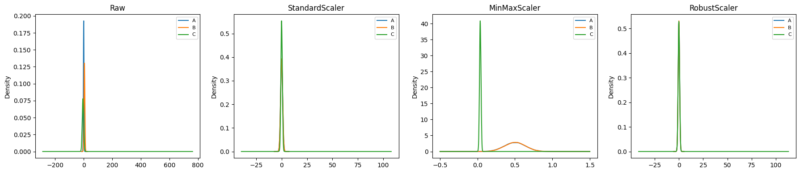<figcaption>Output from this notebook.</figcaption></figure>
<p><strong>👀 What to look at.</strong> Watch column <code>C</code> across the four panels. <strong>StandardScaler</strong>: the single 500 spike stretches the x-axis so far the bell flattens — the outlier redefined the scale. <strong>MinMaxScaler</strong>: the spike pins <code>C</code>'s max to 1.0 and crushes every normal point into a sliver near 0 — the most fragile. <strong>RobustScaler</strong>: <code>C</code>'s bell keeps its shape; the spike is pushed to the edge but can't distort the centre. That is the whole trade: mean/std and min/max trust the extremes, the median/IQR don't.</p>
<div class="note"><div class="h">Note</div><p>✅ <strong>Checkpoint.</strong> (1) One feature has a huge outlier — which scaler keeps the rest of the data readable? (2) Why would you still <em>not</em> use RobustScaler if your model assumes standard-normal inputs?
<strong>Answers:</strong> (1) RobustScaler — median/IQR ignore the spike. (2) Because RobustScaler output is not mean-0/std-1; algorithms tuned for that assumption (e.g. some regularised linear models) behave differently.</p>
</div>

<hr />
<h2 id="concept-2-binarizer">🔲 Concept 2 — Binarizer</h2>
<h3>🎬 How we got here</h3>
<p>Scaling kept the numbers continuous. Sometimes we don't want continuous at all — we want a yes/no flag.</p>
<h3>😖 The problem</h3>
<p>A fraud score of 0.51 vs 0.99 shouldn't both count as &quot;maybe&quot;. We want a hard line: <strong>flag or don't flag</strong>.</p>
<h3>💡 The idea</h3>
<p>A smoke alarm. Above the threshold it screams (1), below it's silent (0). All magnitude information above the line is thrown away — 0.51 and 0.99 both just beep. <em>Where the analogy breaks:</em> a real alarm has hysteresis (it stops below a lower threshold); <code>Binarizer</code> has a single hard edge.</p>
<h3>🔍 What this actually is</h3>
<div class='formula'>B(x)=\begin{cases}1 &amp; x &gt; t \\ 0 &amp; x \le t\end{cases}</div>

<p>Note the <strong>strict</strong> inequality: a value exactly equal to <code>t</code> maps to 0. With <code>threshold=5</code>, the value <code>5</code> itself becomes 0.</p>

<div class="code"><div class="code-head"><span>code</span><span class="cell">cell 23</span></div><pre class="py">binary = Binarizer(threshold=5)

a = np.array([[ 30, 10,  22],
              [ 20,  2,  10],
              [ 33,  5, 5]])

binary1 = binary.transform(a)
binary1</pre></div>
<div class="out"><div class="h">Output</div><pre>array([[1, 1, 1],
       [1, 0, 1],
       [1, 0, 0]])</pre></div>
<p><strong>📖 Read the output.</strong> Input rows <code>[30,10,22]</code>, <code>[20,2,10]</code>, <code>[33,5,5]</code> with <code>threshold=5</code> → <code>[[1,1,1],[1,0,1],[1,0,0]]</code>. Look at the two <code>5</code>s — both became <strong>0</strong> because the rule is <em>strictly greater than</em>. And <code>22</code> vs <code>33</code> are both just <code>1</code>; the size above the line is gone.</p>
<hr />
<h2 id="concept-3-normalizer">📐 Concept 3 — Normalizer</h2>
<h3>🎬 How we got here</h3>
<p>Every scaler so far worked <strong>down a column</strong>. The next three cells do the opposite — across a <strong>row</strong>.</p>
<h3>😖 The problem</h3>
<p>Two customers: one bought <code>[5,2,3]</code> items, another <code>[50,20,30]</code>. Same shopping <em>pattern</em> (5:2:3), wildly different totals. Column scaling can't fix that — the difference is per-row magnitude, not per-column spread.</p>
<h3>💡 The idea</h3>
<p>Compare the <em>recipe</em>, not the <em>portion size</em>. Divide each row by its own length so every row becomes a unit vector — direction kept, size erased. Like normalising API error counts per service to a percentage before comparing reliability. <em>Breaks:</em> if absolute magnitude is the signal (a big customer <em>is</em> different), normalizing destroys real information.</p>
<h3>🔍 What this actually is</h3>
<p>Each row $\mathbf{x}$ is divided by its L2 norm:</p>
<div class='formula'>\text{L2}(\mathbf{x})=\sqrt{x_1^2+x_2^2+\dots+x_n^2}, \qquad \hat{\mathbf{x}}=\frac{\mathbf{x}}{\text{L2}(\mathbf{x})}</div>

<p>Row $[5,2,3]$: $\sqrt{25+4+9}=\sqrt{38}\approx6.164$ → $[0.811,\ 0.324,\ 0.487]$. The next cells compute this <strong>by hand</strong>, then verify <code>sklearn.Normalizer</code> gives the identical array.</p>

<div class="code"><div class="code-head"><span>code</span><span class="cell">cell 26</span></div><pre class="py">X = [[5, 2, 3],
     [2, 4, 10],
     [6, 8, 6]]

sss = [np.sqrt(np.sum(np.power(X[i], 2))) for i in range(len(X))]</pre></div>
<div class="code"><div class="code-head"><span>code</span><span class="cell">cell 27</span></div><pre class="py">len(X)</pre></div>
<div class="out"><div class="h">Output</div><pre>3</pre></div>
<div class="code"><div class="code-head"><span>code</span><span class="cell">cell 28</span></div><pre class="py">np.array([X[k] / sss[k] for k in range(len(X))])</pre></div>
<div class="out"><div class="h">Output</div><pre>array([[0.81110711, 0.32444284, 0.48666426],
       [0.18257419, 0.36514837, 0.91287093],
       [0.51449576, 0.68599434, 0.51449576]])</pre></div>
<div class="code"><div class="code-head"><span>code</span><span class="cell">cell 29</span></div><pre class="py">normalizer = Normalizer()
data_tf = normalizer.fit_transform(X)</pre></div>
<div class="code"><div class="code-head"><span>code</span><span class="cell">cell 30</span></div><pre class="py">data_tf</pre></div>
<div class="out"><div class="h">Output</div><pre>array([[0.81110711, 0.32444284, 0.48666426],
       [0.18257419, 0.36514837, 0.91287093],
       [0.51449576, 0.68599434, 0.51449576]])</pre></div>
<p><strong>📖 Read the output.</strong> The two arrays are <strong>identical</strong> — the hand-rolled list comprehension and <code>sklearn.Normalizer()</code> both give <code>[0.811, 0.324, 0.487], [0.183, 0.365, 0.913], [0.514, 0.686, 0.514]</code>. That's the &quot;make it click&quot; moment: the library is doing exactly the $\sqrt{\sum x_i^2}$ division we did by hand.</p>
<hr />
<h2 id="concept-4-encoders-categorical-numbers">🏷️ Concept 4 — Encoders (categorical → numbers)</h2>
<h3>🎬 How we got here</h3>
<p>So far everything was already numeric. Real data has <em>text</em> — team names, sizes, cities — and models only understand numbers.</p>
<h3>😖 The problem</h3>
<p>A column like <code>TEAM = [RCB, CSK, MI, RCB]</code> is meaningless to a linear model. We must convert it. <strong>How</strong> we convert changes what the model learns.</p>
<h3>💡 The idea</h3>
<p>Three ways to assign numbers, each encoding a different <em>assumption</em> about the categories:</p>
<table class="tbl"><thead>
<tr>
  <th>Encoder</th>
  <th>Idea</th>
  <th>Assumes</th>
  <th>Watch out</th>
</tr>
</thead>
<tbody>
<tr>
  <td><code>LabelEncoder</code></td>
  <td>one integer per label</td>
  <td>—</td>
  <td>invents a fake order (0&lt;1&lt;2) — <strong>targets only, not features</strong></td>
</tr>
<tr>
  <td><code>OneHotEncoder</code></td>
  <td>one 0/1 column per label</td>
  <td>no order</td>
  <td>blows up column count; sparse</td>
</tr>
<tr>
  <td><code>OrdinalEncoder</code></td>
  <td>integer by <em>your</em> rank</td>
  <td>real order exists</td>
  <td>you must supply the correct order</td>
</tr>
</tbody>
</table>
<h3>🔍 What this actually is</h3>
<ul>
<li><strong>Label</strong> → <code>CSK=0, MI=1, RCB=2</code> (alphabetical). Fine for <code>y</code>, dangerous for <code>X</code>.</li>
<li><strong>One-Hot</strong> → three columns <code>CSK, MI, RCB</code>, one <code>1</code> per row. No fake order.</li>
<li><strong>Ordinal</strong> → <code>Small=0, Medium=1, Large=2</code> — <em>you</em> declare the order via <code>categories=</code>.</li>
</ul>
<div class="note"><div class="h">Note</div><p>⚠️ <strong>Heads-up:</strong> the next five cells read <code>../../../01_Python/03_Pandas/Data/encoding.csv</code> — a path from the original author's laptop. It throws <code>FileNotFoundError</code> here. After them I'll drop in a generated <code>TEAM</code> DataFrame so <code>LabelEncoder</code> and <code>OneHotEncoder</code> actually run for you.</p>
</div>

<div class="code"><div class="code-head"><span>code</span><span class="cell">cell 34</span></div><pre class="py">dff = pd.read_csv(&quot;../../../01_Python/03_Pandas/Data/encoding.csv&quot;)
dff</pre></div>
<div class="out"><div class="h">Output</div><pre>---------------------------------------------------------------------------
FileNotFoundError                         Traceback (most recent call last)
Cell In[18], line 1
----&gt; 1 dff = pd.read_csv(&quot;../../../01_Python/03_Pandas/Data/encoding.csv&quot;)
      2 dff

File ~/Documents/MACHINE_LEARNING/pizza_env/lib/python3.14/site-packages/pandas/io/parsers/readers.py:873, in read_csv(filepath_or_buffer, sep, delimiter, header, names, index_col, usecols, dtype, engine, converters, true_values, false_values, skipinitialspace, skiprows, skipfooter, nrows, na_values, keep_default_na, na_filter, skip_blank_lines, parse_dates, date_format, dayfirst, cache_dates, iterator, chunksize, compression, thousands, decimal, lineterminator, quotechar, quoting, doublequote, escapechar, comment, encoding, encoding_errors, dialect, on_bad_lines, low_memory, memory_map, float_precision, storage_options, dtype_backend)
    861 kwds_defaults = _refine_defaults_read(
    862     dialect,
    863     delimiter,
   (...)    869[39</pre></div>
<div class="code"><div class="code-head"><span>code</span><span class="cell">cell 35</span></div><pre class="py">le = LabelEncoder()
df1 = dff
df1.TEAM = le.fit_transform(df1.TEAM)
df1</pre></div>
<div class="out"><div class="h">Output</div><pre>   TEAM  YEAR
0     0  2000
1     1  2002
2     2  2003
3     3  2004
4     0  2005
5     2  2006
6     1  2007
7     0  2008
8     3  2009</pre></div>
<div class="code"><div class="code-head"><span>code</span><span class="cell">cell 36</span></div><pre class="py">enc = OneHotEncoder()
enc_df1 = pd.DataFrame(enc.fit_transform(df1[[&#x27;TEAM&#x27;]]).toarray())
enc_df1</pre></div>
<div class="out"><div class="h">Output</div><pre>     0    1    2    3
0  1.0  0.0  0.0  0.0
1  0.0  1.0  0.0  0.0
2  0.0  0.0  1.0  0.0
3  0.0  0.0  0.0  1.0
4  1.0  0.0  0.0  0.0
5  0.0  0.0  1.0  0.0
6  0.0  1.0  0.0  0.0
7  1.0  0.0  0.0  0.0
8  0.0  0.0  0.0  1.0</pre></div>
<div class="code"><div class="code-head"><span>code</span><span class="cell">cell 37</span></div><pre class="py">abc = df1.join(enc_df1)
abc</pre></div>
<div class="out"><div class="h">Output</div><pre>   TEAM  YEAR    0    1    2    3
0     0  2000  1.0  0.0  0.0  0.0
1     1  2002  0.0  1.0  0.0  0.0
2     2  2003  0.0  0.0  1.0  0.0
3     3  2004  0.0  0.0  0.0  1.0
4     0  2005  1.0  0.0  0.0  0.0
5     2  2006  0.0  0.0  1.0  0.0
6     1  2007  0.0  1.0  0.0  0.0
7     0  2008  1.0  0.0  0.0  0.0
8     3  2009  0.0  0.0  0.0  1.0</pre></div>
<div class="code"><div class="code-head"><span>code</span><span class="cell">cell 38</span></div><pre class="py">final = abc.drop([&#x27;TEAM&#x27;], axis=&#x27;columns&#x27;)
final</pre></div>
<div class="out"><div class="h">Output</div><pre>   YEAR    0    1    2    3
0  2000  1.0  0.0  0.0  0.0
1  2002  0.0  1.0  0.0  0.0
2  2003  0.0  0.0  1.0  0.0
3  2004  0.0  0.0  0.0  1.0
4  2005  1.0  0.0  0.0  0.0
5  2006  0.0  0.0  1.0  0.0
6  2007  0.0  1.0  0.0  0.0
7  2008  1.0  0.0  0.0  0.0
8  2009  0.0  0.0  0.0  1.0</pre></div>
<p><strong>The cells above were the author's originals</strong> — they need the missing CSV, so they're for reading only. Here is the <strong>runnable version</strong> with a tiny generated <code>TEAM</code> column doing the exact same three steps: Label → One-Hot → drop the original.</p>

<div class="code"><div class="code-head"><span>code</span><span class="cell">cell 40</span></div><pre class="py"># A stand-in for the missing encoding.csv: a TEAM column + a numeric feature.
dff = pd.DataFrame({
    &#x27;TEAM&#x27;:  [&#x27;RCB&#x27;, &#x27;CSK&#x27;, &#x27;MI&#x27;, &#x27;RCB&#x27;, &#x27;MI&#x27;, &#x27;CSK&#x27;],
    &#x27;SCORE&#x27;: [180,  150,  200,  175,  210,  160],
})

# --- LabelEncoder: one integer per team (alphabetical: CSK=0, MI=1, RCB=2) ---
le = LabelEncoder()
dff[&#x27;TEAM_label&#x27;] = le.fit_transform(dff[&#x27;TEAM&#x27;])

# --- OneHotEncoder: one 0/1 column per team, no fake order ---
# sparse_output=False -&gt; return a normal dense array (not a sparse matrix).
enc = OneHotEncoder(sparse_output=False)
onehot = pd.DataFrame(
    enc.fit_transform(dff[[&#x27;TEAM&#x27;]]),          # shape: (6 rows, 3 team-columns)
    columns=enc.get_feature_names_out([&#x27;TEAM&#x27;]) # -&gt; [&#x27;TEAM_CSK&#x27;,&#x27;TEAM_MI&#x27;,&#x27;TEAM_RCB&#x27;]
)

final = dff.join(onehot).drop([&#x27;TEAM&#x27;], axis=&#x27;columns&#x27;)
print(&quot;LabelEncoded (note the invented order):&quot;)
print(dff[[&#x27;TEAM&#x27;, &#x27;TEAM_label&#x27;]])
print(&quot;\nOne-Hot final (no order, 3 extra columns):&quot;)
print(final)</pre></div>
<div class="out"><div class="h">Output</div><pre>LabelEncoded (note the invented order):
  TEAM  TEAM_label
0  RCB           2
1  CSK           0
2   MI           1
3  RCB           2
4   MI           1
5  CSK           0

One-Hot final (no order, 3 extra columns):
   SCORE  TEAM_label  TEAM_CSK  TEAM_MI  TEAM_RCB
0    180           2       0.0      0.0       1.0
1    150           0       1.0      0.0       0.0
2    200           1       0.0      1.0       0.0
3    175           2       0.0      0.0       1.0
4    210           1       0.0      1.0       0.0
5    160           0       1.0      0.0       0.0</pre></div>
<p><strong>📖 Read the output.</strong> Label encoding turned <code>RCB→2, CSK→0, MI→1</code> — alphabetical, and now a model thinks <code>RCB(2)</code> is &quot;twice&quot; <code>MI(1)</code>. That's the trap. The One-Hot block replaces the single label with three 0/1 columns — row 0 is <code>TEAM_RCB=1</code>, others 0 — no order implied, at the cost of extra width.</p>
<p><strong>👀 On <code>OrdinalEncoder</code> (next cell):</strong> it encodes <code>Small=0, Medium=1, Large=2</code> because <strong>you</strong> passed <code>categories=[[&quot;Small&quot;,&quot;Medium&quot;,&quot;Large&quot;]]</code>. Remove that argument and it would sort alphabetically → <code>Large=0, Medium=1, Small=2</code> (backwards!). For genuinely-ordered data, always declare the order.</p>
<div class="note"><div class="h">Note</div><p>✅ <strong>Checkpoint.</strong> (1) When is <code>LabelEncoder</code> acceptable on a feature? (2) Why is One-Hot safer than Label for <code>TEAM</code>?
<strong>Answers:</strong> (1) Almost never — only if the categories truly have no order <em>and</em> you accept the model treating integers as ordered; prefer One-Hot. (2) One-Hot gives each team an independent axis, so no false &quot;RCB &gt; MI&quot; ordering leaks into the model.</p>
</div>

<div class="code"><div class="code-head"><span>code</span><span class="cell">cell 43</span></div><pre class="py">import pandas as pd
from sklearn.preprocessing import OrdinalEncoder

df = pd.DataFrame({&quot;Size&quot;: [&quot;Small&quot;, &quot;Medium&quot;, &quot;Large&quot;, &quot;Small&quot;, &quot;Large&quot;]})

encoder = OrdinalEncoder(categories=[[&quot;Small&quot;, &quot;Medium&quot;, &quot;Large&quot;]])

df[&quot;Size_Encoded&quot;] = encoder.fit_transform(df[[&quot;Size&quot;]])

print(df)</pre></div>
<div class="out"><div class="h">Output</div><pre>     Size  Size_Encoded
0   Small           0.0
1  Medium           1.0
2   Large           2.0
3   Small           0.0
4   Large           2.0</pre></div>
<p><strong>📖 Read the output:</strong> <code>Small=0, Medium=1, Large=2</code> — exactly the order we declared.</p>
<hr />
<h2 id="concept-5-class-imbalance">⚖️ Concept 5 — Class imbalance</h2>
<h3>🎬 How we got here</h3>
<p>Features are clean and encoded. Now the <em>target</em> <code>y</code> has a problem: <code>[Fail, Fail, Fail, Pass, Pass]</code> — 3 vs 2, and in real fraud/churn data it's more like 98 vs 2.</p>
<h3>😖 The problem</h3>
<p>A lazy model that <em>always</em> predicts the majority class scores 98% accuracy while catching zero minority cases. Accuracy lies when classes are lopsided.</p>
<h3>💡 The idea</h3>
<p>Rebalance the training set so the model sees both classes fairly — either <strong>photocopy</strong> the rare class (over-sampling) or <strong>shred</strong> some of the common class (under-sampling). Backend analogy: load-balancing test traffic so a rare error path actually gets exercised. <em>Breaks:</em> photocopying duplicates information (overfitting risk); shredding throws real data away.</p>
<h3>🔍 What this actually is</h3>
<ul>
<li><code>RandomOverSampler</code> — duplicates random minority rows until balanced. 5 rows → 6.</li>
<li><code>RandomUnderSampler</code> — drops random majority rows until balanced. 5 rows → 4.</li>
</ul>
<p>Both need <code>imbalanced-learn</code> (installed by the <code>pip</code> cell). <strong>Production rule:</strong> resample the <strong>training split only</strong>, never before the train/test split — otherwise duplicated rows leak into test and inflate your metrics.</p>

<div class="code"><div class="code-head"><span>code</span><span class="cell">cell 46</span></div><pre class="py">pip install imbalanced-learn</pre></div>
<div class="out"><div class="h">Output</div><pre>Collecting imbalanced-learn
  Downloading imbalanced_learn-0.14.2-py3-none-any.whl.metadata (8.9 kB)
Requirement already satisfied: numpy&lt;3,&gt;=1.25.2 in /Users/kaliprasad/Documents/MACHINE_LEARNING/pizza_env/lib/python3.14/site-packages (from imbalanced-learn) (2.4.6)
Requirement already satisfied: scipy&lt;2,&gt;=1.11.4 in /Users/kaliprasad/Documents/MACHINE_LEARNING/pizza_env/lib/python3.14/site-packages (from imbalanced-learn) (1.18.0)
Requirement already satisfied: scikit-learn&lt;2,&gt;=1.4.2 in /Users/kaliprasad/Documents/MACHINE_LEARNING/pizza_env/lib/python3.14/site-packages (from imbalanced-learn) (1.9.0)
Collecting sklearn-compat&lt;0.2,&gt;=0.1.6 (from imbalanced-learn)
  Downloading sklearn_compat-0.1.6-py3-none-any.whl.metadata (22 kB)
Requirement already satisfied: joblib&lt;2,&gt;=1.2.0 in /Users/kaliprasad/Documents/MACHINE_LEARNING/pizza_env/lib/python3.14/site-packages (from imbalanced-learn) (1.5.3)
Requirement already satisfied: threadpoolctl&lt;4,&gt;=2.0.0 in /Users/kaliprasad/Documents/MACHINE_LEARNING/pizza_env/lib/python3.14/site-packages (from imbalanced-learn) (3.6.0)
Requirement already satisfied: narwhals&gt;=2.0.1 in /Users/kaliprasad/Documents/MACHINE_LEARNING/pizza_env/lib/python3.14/site-packages (from scikit-learn&lt;2,&gt;=1.4.2-&gt;imbalanced-learn) (2.24.0)
Downloading imbalanced_learn-0.14.2-py3-none-any.whl (236 kB)
Downloading sklearn_compat-0.1.6-py3-none-any.whl (22 kB)
Installing collected packages: sklearn-compat, imbalanced-learn
   ━━━━━━━━━━━━━━━━━━━━━━━━━━━━━━━━━━━━━━━━ 2/2 [imbalanced-learn]
Successfully installed imbalanced-learn-0.14.2 sklearn-compat-0.1.6
Note: you may need to restart the kernel to use updated packages.</pre></div>
<div class="code"><div class="code-head"><span>code</span><span class="cell">cell 47</span></div><pre class="py">from imblearn.over_sampling import RandomOverSampler

X = pd.DataFrame({&quot;Marks&quot;: [10, 20, 30, 40, 50]})
y = [&quot;Fail&quot;, &quot;Fail&quot;, &quot;Fail&quot;, &quot;Pass&quot;, &quot;Pass&quot;]

ros = RandomOverSampler()

X_resampled, y_resampled = ros.fit_resample(X, y)

print(y_resampled)</pre></div>
<div class="out"><div class="h">Output</div><pre>[&#x27;Fail&#x27;, &#x27;Fail&#x27;, &#x27;Fail&#x27;, &#x27;Pass&#x27;, &#x27;Pass&#x27;, &#x27;Pass&#x27;]</pre></div>
<div class="code"><div class="code-head"><span>code</span><span class="cell">cell 48</span></div><pre class="py">from imblearn.under_sampling import RandomUnderSampler

X = pd.DataFrame({&quot;Marks&quot;: [10, 20, 30, 40, 50]})
y = [&quot;Fail&quot;, &quot;Fail&quot;, &quot;Fail&quot;, &quot;Pass&quot;, &quot;Pass&quot;]

rus = RandomUnderSampler()

X_resampled, y_resampled = rus.fit_resample(X, y)

print(y_resampled)</pre></div>
<div class="out"><div class="h">Output</div><pre>[&#x27;Fail&#x27;, &#x27;Fail&#x27;, &#x27;Pass&#x27;, &#x27;Pass&#x27;]</pre></div>
<p><strong>📖 Read the two outputs.</strong> Over-sampler: <code>[Fail×3, Pass×3]</code> — it <strong>copied</strong> one <code>Pass</code> row (5→6). Under-sampler: <code>[Fail×2, Pass×2]</code> — it <strong>deleted</strong> one <code>Fail</code> row (5→4). Both end balanced; one risks overfitting, the other loses data.</p>
<div class="note"><div class="h">Note</div><p>🔀 <strong>Your call.</strong> Your real dataset is 98/2 imbalanced. Three options: <strong>(a)</strong> over-sample the minority, <strong>(b)</strong> under-sample the majority, <strong>(c)</strong> leave it and switch to a better metric (precision/recall, AUC) or use <code>class_weight</code>.
<strong>Trade-off:</strong> (a) keeps all data but can overfit the copied rows; (b) is fast but discards information; (c) is usually the first thing to try in production — no data touched, the model or the metric just stops rewarding the majority class.</p>
</div>
<hr />
<h2 id="concept-6-missing-values">🕳️ Concept 6 — Missing values</h2>
<h3>🎬 How we got here</h3>
<p>Classes are balanced. But the data has holes: <code>Age = [20, 25, None, 30, 35]</code> — most estimators refuse to run with a <code>NaN</code> inside.</p>
<h3>😖 The problem</h3>
<p>You can't average a blank. Either <strong>fill</strong> the hole with a sensible guess (imputation) or <strong>delete</strong> the row — and each choice biases the data differently.</p>
<h3>💡 The idea</h3>
<p>Filling is like estimating a missing latency sample from its neighbours; deleting is like dropping the log line entirely. Fill keeps rows but can blur the truth; delete is honest but shrinks your data.</p>

<h3>🔍 What the three imputers actually do</h3>
<ul>
<li><strong><code>SimpleImputer(strategy=&quot;mean&quot;)</code></strong> → fill with the column average.</li>
<li><strong><code>SimpleImputer(strategy=&quot;median&quot;)</code></strong> → fill with the middle value; robust to outliers.</li>
<li><strong><code>KNNImputer(n_neighbors=k)</code></strong> → find the <code>k</code> most similar rows (using the <em>other</em> columns) and average them.</li>
</ul>
<p>On <code>Age = [20, 25, _, 30, 35]</code>: mean = median = <strong>27.5</strong> here only because the data is symmetric — add an outlier like <code>120</code> and mean fills <code>~49</code> while median stays <code>27.5</code>. That's when the choice starts to matter. The next four cells run mean, median, KNN, then the deletion fallbacks (<code>dropna</code>, <code>drop_duplicates</code>).</p>

<div class="code"><div class="code-head"><span>code</span><span class="cell">cell 52</span></div><pre class="py">from sklearn.impute import SimpleImputer

df = pd.DataFrame({&quot;Age&quot;: [20, 25, None, 30, 35]})

imputer = SimpleImputer(strategy=&quot;mean&quot;)

df[&quot;Age&quot;] = imputer.fit_transform(df[[&quot;Age&quot;]])
print(df)</pre></div>
<div class="out"><div class="h">Output</div><pre>    Age
0  20.0
1  25.0
2  27.5
3  30.0
4  35.0</pre></div>
<div class="code"><div class="code-head"><span>code</span><span class="cell">cell 53</span></div><pre class="py">from sklearn.impute import SimpleImputer

df = pd.DataFrame({&quot;Age&quot;: [20, 25, None, 30, 35]})

imputer = SimpleImputer(strategy=&quot;median&quot;)

df[&quot;Age&quot;] = imputer.fit_transform(df[[&quot;Age&quot;]])
print(df)</pre></div>
<div class="out"><div class="h">Output</div><pre>    Age
0  20.0
1  25.0
2  27.5
3  30.0
4  35.0</pre></div>
<div class="code"><div class="code-head"><span>code</span><span class="cell">cell 54</span></div><pre class="py">from sklearn.impute import KNNImputer

df = pd.DataFrame({&quot;Height&quot;: [170, 172, 171, 180], &quot;Weight&quot;: [65, 67, None, 85]})

imputer = KNNImputer(n_neighbors=2)

df = pd.DataFrame(imputer.fit_transform(df), columns=df.columns)

print(&quot;After Imputation&quot;)
print(df)</pre></div>
<div class="out"><div class="h">Output</div><pre>After Imputation
   Height  Weight
0   170.0    65.0
1   172.0    67.0
2   171.0    66.0
3   180.0    85.0</pre></div>
<div class="code"><div class="code-head"><span>code</span><span class="cell">cell 55</span></div><pre class="py">df = pd.DataFrame({&quot;Age&quot;: [20, 25, None, 30, 35]})

df = df.dropna()
print(df)</pre></div>
<div class="out"><div class="h">Output</div><pre>    Age
0  20.0
1  25.0
3  30.0
4  35.0</pre></div>
<div class="code"><div class="code-head"><span>code</span><span class="cell">cell 56</span></div><pre class="py">df = pd.DataFrame({&quot;Name&quot;: [&quot;Ram&quot;, &quot;Shyam&quot;, &quot;Ram&quot;, &quot;Amit&quot;]})

df = df.drop_duplicates()
print(df)</pre></div>
<div class="out"><div class="h">Output</div><pre>    Name
0    Ram
1  Shyam
3   Amit</pre></div>
<p><strong>📖 Read the four outputs.</strong></p>
<ul>
<li><strong>Mean &amp; median</strong> both filled <code>27.5</code> — identical only because <code>[20,25,30,35]</code> is symmetric.</li>
<li><strong>KNNImputer</strong> filled the missing <code>Weight</code> with <strong>66.0</strong> = average of the two nearest rows by <code>Height</code> ((65+67)/2). It used <em>another column</em> to guess, not just the column average.</li>
<li><strong><code>dropna()</code></strong> deleted the whole row (5→4); <strong><code>drop_duplicates()</code></strong> removed the repeated <code>Ram</code> (4→3). Deletion is honest but irreversible — fine only when holes are rare and random.</li>
</ul>
<hr />
<h2 id="concept-7-feature-engineering-4-quick-moves">🛠️ Concept 7 — Feature engineering (4 quick moves)</h2>
<h3>🎬 How we got here</h3>
<p>Data is scaled, encoded, balanced, and hole-free. The last lever: <strong>create better columns</strong> from the ones we have.</p>
<h3>😖 The problem</h3>
<p>Sometimes the signal isn't in any single column — it's in a <em>transformation</em> (<code>log</code>), a <em>combination</em> (<code>length×width</code>), a <em>bucket</em> (age-group), or a <em>part</em> of a value (month-of-year).</p>
<h3>💡 The idea</h3>
<p>Help the model by hand-crafting features it can't easily derive linearly. Like a backend dev adding a derived <code>p99_latency</code> column instead of making the dashboard recompute it. <em>Breaks:</em> engineered features can leak target information or add noise — validate each one.</p>
<h3>🔍 The four moves</h3>
<ol>
<li><strong>Log transform</strong> — <code>np.log(Salary)</code> compresses 10,000→100,000 into 9.2→11.5. Every 10× jump becomes a constant +2.3 step. For money/population skew. (Fails on 0/negatives → use <code>np.log1p</code>.)</li>
<li><strong>Interaction</strong> — <code>Area = Length × Width</code>. New signal from two columns.</li>
<li><strong>Binning</strong> — <code>KBinsDiscretizer(n_bins=3, strategy=&quot;uniform&quot;)</code> cuts age 18–60 into equal-width buckets <code>[0,0,1,1,2]</code>.</li>
<li><strong>Date parts</strong> — <code>pd.to_datetime</code> + <code>.dt.year/.month/.day</code> decompresses one opaque string into usable numbers.</li>
</ol>

<div class="code"><div class="code-head"><span>code</span><span class="cell">cell 59</span></div><pre class="py">import pandas as pd
import numpy as np

df = pd.DataFrame({&quot;Salary&quot;: [10000, 20000, 50000, 100000]})

df[&quot;Log_Salary&quot;] = np.log(df[&quot;Salary&quot;])
print(df)</pre></div>
<div class="out"><div class="h">Output</div><pre>   Salary  Log_Salary
0   10000    9.210340
1   20000    9.903488
2   50000   10.819778
3  100000   11.512925</pre></div>
<div class="code"><div class="code-head"><span>code</span><span class="cell">cell 60</span></div><pre class="py">import pandas as pd

df = pd.DataFrame({&quot;Length&quot;: [2, 3, 4], &quot;Width&quot;: [5, 6, 7]})

df[&quot;Area&quot;] = df[&quot;Length&quot;] * df[&quot;Width&quot;]
print(df)</pre></div>
<div class="out"><div class="h">Output</div><pre>   Length  Width  Area
0       2      5    10
1       3      6    18
2       4      7    28</pre></div>
<div class="code"><div class="code-head"><span>code</span><span class="cell">cell 61</span></div><pre class="py">from sklearn.preprocessing import KBinsDiscretizer

df = pd.DataFrame({&quot;Age&quot;: [18, 25, 35, 45, 60]})

encoder = KBinsDiscretizer(n_bins=3, encode=&quot;ordinal&quot;, strategy=&quot;uniform&quot;)

df[&quot;Age_Bin&quot;] = encoder.fit_transform(df[[&quot;Age&quot;]])
print(df)</pre></div>
<div class="out"><div class="h">Output</div><pre>   Age  Age_Bin
0   18      0.0
1   25      0.0
2   35      1.0
3   45      1.0
4   60      2.0</pre></div>
<div class="code"><div class="code-head"><span>code</span><span class="cell">cell 62</span></div><pre class="py">df = pd.DataFrame({&quot;Date&quot;: [&quot;2025-01-10&quot;, &quot;2025-02-15&quot;, &quot;2025-03-20&quot;]})

df[&quot;Date&quot;] = pd.to_datetime(df[&quot;Date&quot;])

df[&quot;Year&quot;] = df[&quot;Date&quot;].dt.year
df[&quot;Month&quot;] = df[&quot;Date&quot;].dt.month
df[&quot;Day&quot;] = df[&quot;Date&quot;].dt.day
print(df)</pre></div>
<div class="out"><div class="h">Output</div><pre>        Date  Year  Month  Day
0 2025-01-10  2025      1   10
1 2025-02-15  2025      2   15
2 2025-03-20  2025      3   20</pre></div>
<p><strong>📖 Read the four outputs.</strong> Log: <code>10000→9.21</code>, <code>100000→11.51</code> — a 10× salary jump is now a flat +2.3. Interaction: <code>2×5=10, 3×6=18, 4×7=28</code>. Binning: ages <code>[18,25,35,45,60]</code> → bins <code>[0,0,1,1,2]</code>. Dates: <code>2025-01-10</code> → <code>Year=2025, Month=1, Day=10</code>.</p>
<hr />
<h2 id="what-we-learned">🎯 What We Learned</h2>
<ul>
<li><strong>Scaling</strong> re-units columns without reshaping them; pick by outlier-sensitivity (Standard / MinMax / Robust).</li>
<li><strong>Binarizer</strong> hard-thresholds to 0/1 and throws away magnitude.</li>
<li><strong>Normalizer</strong> scales <em>rows</em> to unit length — for comparing patterns, not totals.</li>
<li><strong>Encoders</strong> turn categories into numbers; the choice encodes an assumption about order.</li>
<li><strong>Resampling</strong> balances classes — on the training split only.</li>
<li><strong>Imputation</strong> fills holes; mean/median per column, KNN across columns; deletion is the honest fallback.</li>
<li><strong>Feature engineering</strong> builds columns the model can't derive itself.</li>
</ul>
<h3>🧾 Cheat-sheet</h3>
<table class="tbl"><thead>
<tr>
  <th>Tool</th>
  <th>Axis</th>
  <th>Use when</th>
  <th>Avoid when</th>
</tr>
</thead>
<tbody>
<tr>
  <td>StandardScaler</td>
  <td>column</td>
  <td>roughly normal data</td>
  <td>heavy outliers</td>
</tr>
<tr>
  <td>MinMaxScaler</td>
  <td>column</td>
  <td>you need a fixed [0,1] range</td>
  <td>any extreme value exists</td>
</tr>
<tr>
  <td>RobustScaler</td>
  <td>column</td>
  <td>outliers present</td>
  <td>model needs mean-0/std-1</td>
</tr>
<tr>
  <td>Binarizer</td>
  <td>element</td>
  <td>you want a yes/no flag</td>
  <td>magnitude matters</td>
</tr>
<tr>
  <td>Normalizer</td>
  <td>row</td>
  <td>comparing row <em>patterns</em></td>
  <td>row totals are the signal</td>
</tr>
<tr>
  <td>LabelEncoder</td>
  <td>target only</td>
  <td>encoding <code>y</code></td>
  <td>encoding <code>X</code></td>
</tr>
<tr>
  <td>OneHotEncoder</td>
  <td>feature</td>
  <td>no category order</td>
  <td>very high cardinality</td>
</tr>
<tr>
  <td>OrdinalEncoder</td>
  <td>feature</td>
  <td>real order, you supply it</td>
  <td>order is wrong</td>
</tr>
<tr>
  <td>Over/UnderSampler</td>
  <td>rows</td>
  <td>imbalanced train split</td>
  <td>before the split</td>
</tr>
<tr>
  <td>SimpleImputer</td>
  <td>column</td>
  <td>few random holes</td>
  <td>holes are informative</td>
</tr>
<tr>
  <td>KNNImputer</td>
  <td>row (via cols)</td>
  <td>rows are similar</td>
  <td>wide/noisy data</td>
</tr>
</tbody>
</table>
<h3>⚠️ When this breaks</h3>
<ul>
<li>Fitting any transformer on the <strong>full</strong> dataset (train+test) leaks information — fit on train only.</li>
<li>One-Hot on a 10,000-category column explodes memory.</li>
<li>Imputing with mean when the data is skewed pulls every fill toward the outliers.</li>
</ul>
<h3>🚀 Where to go next</h3>
<p>The natural next step: bundle these steps into a <code>Pipeline</code> / <code>ColumnTransformer</code> so <code>fit</code>-on-train-only happens automatically — that's the production-grade version of everything we did by hand today.</p>

<!-- HANDWRITTEN:START -->
<h2 id="handwritten">✍️ Handwritten notes</h2>
<p>The pages written by hand while working through this topic — the version that came before the tidy write-up. Click any page to enlarge.</p>
<div class="hn-grid"><button class="hn-thumb" data-src="../Handwritten_Notes/Preprocessing_Page_1of3.png" data-name="Preprocessing_Page_1of3.png">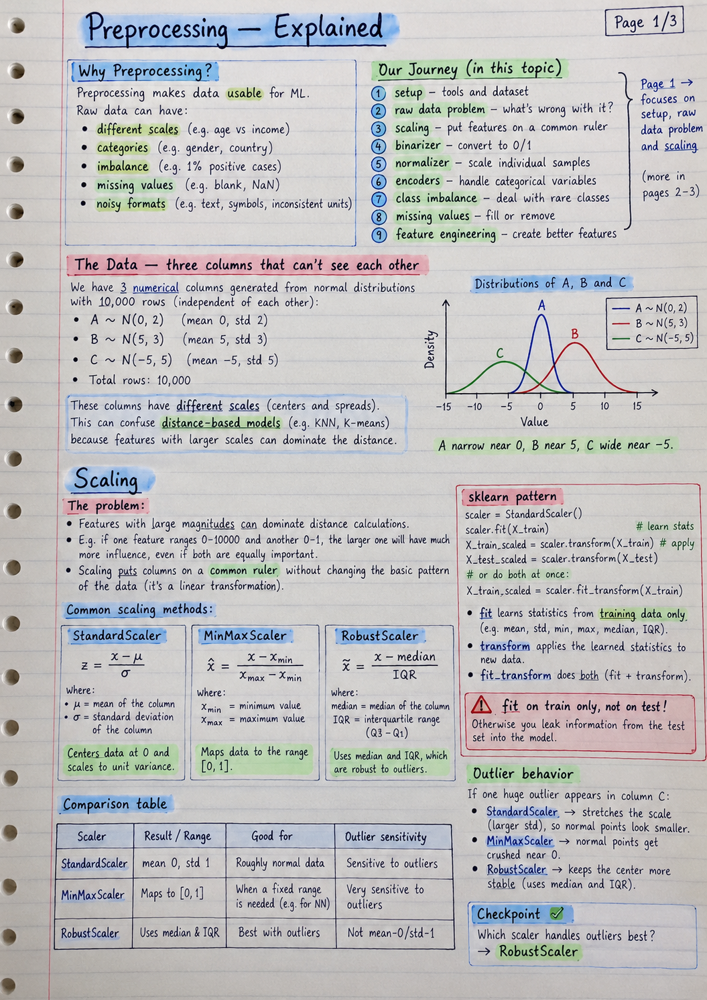<span>Preprocessing Page 1of3</span></button><button class="hn-thumb" data-src="../Handwritten_Notes/Preprocessing_Page_2of3.png" data-name="Preprocessing_Page_2of3.png">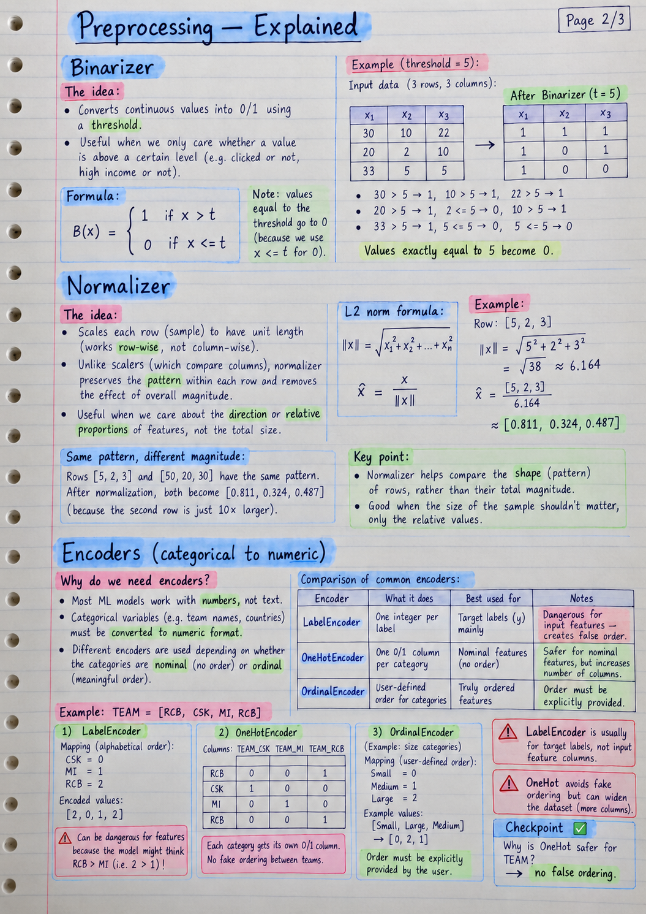<span>Preprocessing Page 2of3</span></button><button class="hn-thumb" data-src="../Handwritten_Notes/Preprocessing_Page_3of3.png" data-name="Preprocessing_Page_3of3.png">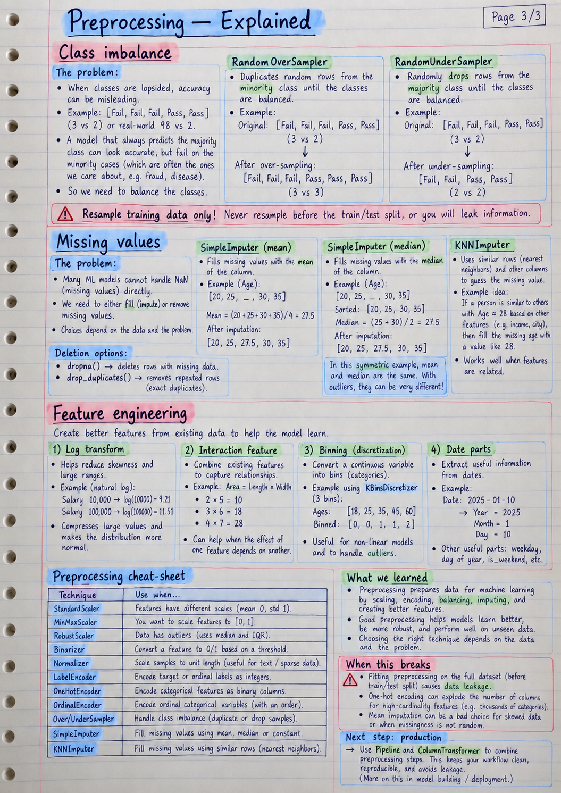<span>Preprocessing Page 3of3</span></button></div>
<!-- HANDWRITTEN:END -->
<div class="foot"><a class="btn" href="../Concept/03_preprocessing.ipynb">03_preprocessing.ipynb ↗</a><a class="btn" href="../Concept/24_Preprocessing_Concepts.ipynb">24_Preprocessing_Concepts.ipynb ↗</a>
  <a class="btn" href="../../../17_Learning_As_Of_Now/Claude/index.html">← Back to the map</a>
</div>
</main></div>
<script src="../../../17_Learning_As_Of_Now/shared/lesson.js"></script>
</body>
</html>
